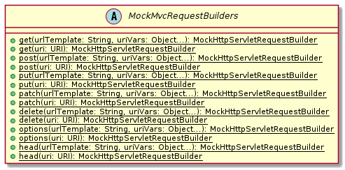

介紹
概述
本文以線上商店為例，介紹基於 Spring Boot 及 Spring Cloud 開發微服務「Microservices」應用。
本文將會囊括技術：
-
Spring Boot
-
Spring Data MongoDB
-
Spring Data JPA
-
Spring Data REST
-
Spring Security
-
Service Registration & Discovery
-
API Gateway Pattern
-
Single Sign On
用例
整個業務由三個子業務組成：
-
商品目錄營運
-
倉儲營運
-
訂單交易
業務參與者劃分為四個⻆色：
-
商品目錄運營
-
倉儲運營
-
訂單運營
-
顧客
在商品目錄營運子業務中，商品目錄運營參與了三個用例：
-
新建商品。作為商品目錄運營，其可以新建商品項。商品拥有名穪、圖片等屬性；
-
修改商品。作為商品目錄運營，其可以修改商品的名穪、圖片等屬性；
-
刪除商品。作為商品目錄運營，其可以刪除不再銷售的商品。
在倉儲營運子業務中，倉儲運營參與了三個用例：
-
新建倉儲項。作為倉儲運營，其可以為每一項商品建立相應的倉儲項，倉儲項拥有單價、庫存量等屬性；
-
入庫。作為倉儲運營，其可以增加任意倉儲項的庫存量；
-
出庫。作為倉儲運營，其可以減少任意倉儲項的庫存量。
在訂單交易子業務中，顧客與訂單運營共同參與了七個用例：
-
新建訂單。作為顧客，其可以新建訂單。每個訂單都可以包含若干訂單項，每項指明了商品及購買數量；
-
提交訂單。作為顧客，其可以提交訂單。訂單一但被提交，將從倉儲中消減相應倉儲項的庫存量；
-
取消訂單。作為顧客，其可以取消新建的訂單；
-
支付訂單。作為顧客，其可以支付已提交的訂單；
-
發貨。作為訂單運營，其可以將已支付的訂單標記為「已發貨」；
-
交貨。作為訂單運營，其可以在貨物交至顧客手中之後將訂單標記為「已交貨」；
-
結束訂單。作為顧客，其可以在貨物送逹後，結束訂單。
架構
本應用採用微服務架構，同時應用API網關模式。
微服務
微服務（Microservices）是一種軟體架構風格，它是以專注於單一責任與功能的小型功能區塊（Small Building Blocks）為基礎，利用模組化的方式組合出複雜的大型應用程式，各功能區塊使用與語言無關（Language-Independent/Language agnostic）的 API 集相互通訊。
微服務的起源是由 Peter Rodgers 博士於 2005 年度雲端運算博覽會提出的微 Web 服務（Micro-Web-Service）開始，Juval Löwy 則是與他有類似的前導想法，將類別變成細粒服務（granular services），以作為 Microsoft 下一階段的軟體架構，其核心想法是讓服務是由類似 Unix 管道的存取方式使用，而且複雜的服務背後是使用簡單 URI 來開放介面，任何服務，任何細粒都能被開放（exposed）。這個設計在 HP 的大田大金驗室被實現，具有改變複雜軟體系統的強大力量。
2014年，Martin Fowler 與 James Lewis 共同提出了微服務的概念，定義了微服務是由以單一應用程式構成的小服務，自己擁有自己的行程與輕量化處理，服務依業務功能設計，以全自動的方式部署，與其他服務使用 HTTP API 通訊。同時服務會使用最小的規模的集中管理（例如 Docker）能力，服務可以用不同的程式語言與貨料庫等元作實作。
https://zh.wikipedia.org/wiki/微服務
微服務是一種以業務功能為主的服務設計概念，每一個服務都具有自主運行的業務功能，對外開放不受語言限制的 API（最常用的是 HTTP），應用程式則是由一個或多個微服務組成。
微服務的另一個對比是單體式應用程式。單體式應用表示一個應用程式內包含了所有需要的業務功能，並且使用像主從式架構（Client/Server）或是多層次架構（N-tier）實作，雖然它也是能以分散式應用程序來實作，但是在單體式應用內，每一個業務功能是不可分割的。若要對單體式應用進行擴展則必須將整個應用程式都放到新的運算資源（如：虛擬機器）內，但事實上應用程式中最吃資源、需要運算資源的僅有某個業務部份（例如跑分析報表或是數學演算法分析），但因為單體式應用無法分割該部份，因此無形中會有大量的資源浪費的現象。
微服務運用了以業務功能的設計概念，應用程式在設計時就能先以業務功能或流程設計先行分割，將各個業務功能都獨立實作成一個能自主執行的個體服務，然後再利用相同的協定將所有應用程式需要的服務都組合起來，形成一個應用程式。若需要針對特定業務功能進行擴充時，祗要對該業務功能的服務進行擴展就好，不需要整個應用程式都擴展，同時，由於微服務是以業務功能導向的實作，因此不會受到應用程式的干擾，微服務的管理員可以視運算資源的需要來組態微服務到不同的運算資源內，或是布建新的運算資源並將它組態進去。
雖然使用一般的伺服器虛擬化技術就能應用於微服務的管理，但容器技術（Container Technology）如 Docker 會更加地適合發展微服務的運算資源管理技術。
https://zh.wikipedia.org/wiki/微服務
總體業務分為三個部份：商品目錄營運、倉儲營運和訂單交易，每部份業務分別實現為一個微服務：Catalog Service, Inventory Service 和 Order Service。

每個微服務有維護獨立的數據庫。微服務以RESTFul API的形式向外曝露服務，同時微服務與微服務之間也通過 RESTFul API 通信。
API 網關模式
使用多個客戶端應用來設計和生成基於微服務的大型複雜應用程序時， API 網關是非常不錯的方法。這一服務可為某些微服務組提供單一入口點。這類似於面嚮對象設計的外觀模式，但在此情況下，它是分佈式系統的一部份。因為構建時考慮了客戶端應用的需求，所以 API 網關模式有時也穪為"用於前端的後端"（BFF）。
因此，API 網關位於客戶端應用和微服務之間。它充當反嚮代理，將請求從客戶端路由到服務。它還可以提供其他跨領域功能，例如身份驗證、SSL 終止和緩存。
https://docs.microsoft.com/zh-cn/dotnet/architecture/microservices/architect-microservice-container-applications/direct-client-to-microservice-communication-versus-the-api-gateway-pattern
API 網關可以提供多個功能。然而，根據產品，它可能提供更豐富或更簡單的功能，任何 API 網關最重要和最基本的功能都採用以下設計模式：
反嚮代理或網關路由。API 網關提供一個反嚮代理將請求（第 7 層路由，通常是 HTTP 請求）重定嚮或路由到內部微服務的終結點。網關為客戶端應用提供單個終結點或 URL，然後將請求映射到一組內部服務。此路由功能有助於將客戶端應用從微服務中分離出來；而且在升級整體式 API 服務時，將 API 網關置於整體式 API 服務和客戶端應用之間，操作會變得非常方便，然後可以添加新的 API 作為新的微服務，同時仍然可以使用整體式 API 服務，直到將來它拆分成多個微服務為止。由於 API 網關，客戶端應用不會注意到所使用 API 是否已實現為內部微服務或整體式 API，更重要的是，當對整體式 API 進行演進並將其重構為微服務時，得益於 API 網關路由，任何 URI 更改土心山一不會對客戶端應用造成影响。
請求聚合。作為網關模式的一部份，你可以將多個針對多個內部微服務的客戶端請求（通常是 HTTP 請求）聚合到單個客戶端請求中。如果客戶端頁面/屏幕需要來算多個微服務的信息，此模式特別方便。通過這種方法，客戶端應用嚮 API 網關發送一個單一請求，該網關嚮內部微服務發送多個請求，然後聚合結果，並將所有內容發送迴客戶端應用。這種設計模式的主要優勢和目標是減少客戶端應用和後端 API 之間的隔閡，這對於微服務所在的數據中心中的遠程應用至關重要，如移動應用或來算客戶端遠程瀏覽器 Javascript 的 SPA 應用發出的請求。對於在服務器環境中執行請求的常規 Web 應用（如 ASP.NET Core MVC Web 應用），這種模式並不重要，因為延遲時間比遠程客戶端應用要小得多。
跨領域問題或網關卸載。根據每個 API 網關產品提供的功能，你可以將功能從單個微服務轉移到網關，從而通過將跨領域問題整合到一個層級中來簡化每個微服務的實現。這對於在每個內部微服務中難以正確實現的特殊功能而言特別方便，比如以下功能：
身份驗證和授權
服務發現集成
响應緩存
重試策略、斷路器和 QoS
速率限制和遏制
負載均衡
日志記錄、跟踪、相關性
標頭、查詢字符串和聲明轉換
IP 允許列表
https://docs.microsoft.com/zh-cn/dotnet/architecture/microservices/architect-microservice-container-applications/direct-client-to-microservice-communication-versus-the-api-gateway-pattern
本應用採用 API 網關模式實現網關路由及身份驗證、服務發現集成、負載均衡等跨領域問題。

工具設置
概述
本章介紹在 MacOS, Windows 和 Ubuntu Linux 三個主流操作系統上安裝設置開發所需的 SDK 和工具。我們所需的 SDK 和工具包括：
-
Java Development Kit (JDK) 1.8 及以上
-
Intellij IDEA
-
Docker
Java Development Kit (JDK)
Java Development Kit（JDK）是昇陽電腦針對 Java 開發人員發布的免費軟體開發套件（SDK，Software development kit）。自從 Java 推出以來，JDK 已經成為使用最廣泛的 Java SDK。由於 JDK 的一部份特性採用商業許可證，而非開源。因此，2006年昇陽電腦宣布將發布基於 GPL 的開源 JDK，使 JDK 成為自由軟體。在去掉了少量閉源特性之後，昇陽電腦最終促成了 GPL 的 OpenJDK 的發布。
https://zh.wikipedia.org/wiki/JDK
JDK 包含了一批用於 Java 開發的組件，其中包括：
javac：編譯器，將字尾名為「.java」的原始碼編譯成字尾名為「.class」的位元組碼
java：執行工具，執行「.class」的位元組碼
jar：打包工具，將相關的類檔案打包成一個檔案
javadoc：文件生成器，從原始碼注釋中提取文件，注釋需符合規範
jdb debugger：除錯工具
jps：顯示當前 Java 程式執行的行程狀態
javap：反編譯程式
appletviewer：執行和除錯 applet 程式的工具，不需要使用瀏覽器
javah：從 Java 類別生成 C 標頭檔和 C 原始檔。這些檔案提供了連接膠合，使 Java 和 C 代碼可進行互動
javaws：執行 JNLP 程式
extcheck：一個檢測 jar 包衝突的工具
apt：注釋處理工具
jhat：Java 堆分析工具
jstack：棧跟蹤程式
jstat：JVM 檢測統計工具
jstatd：jstat 守護行程
jinfo：取得正在執行或崩潰的 Java 程式組態資訊
jmap：取得 Java 行程記憶體對映資訊
idlj：IDL-to-Java 編釋器。將 IDL 語言轉化為 Java 檔案
policytool：一個 GUI 的策略檔案建立和管理工具
jrunscript：命令行指令碼執行
JDK 中還包括完整的 JRE（Java Runtime Environment），Java 執行環境，也被穪為 private runtime。包括了用於產品環境的各種庫類，如基礎類別館 rt.jar，以及給開發人員使用的補充庫，如國際化與在地化的類別館、IDL 庫等等。
JDK 中還包括各種樣常式序，用以展示 Java API 中的各部份。
https://zh.wikipedia.org/wiki/JDK
當前市面上主流的 JDK 實現有 Oracle JDK 和 OpenJDK。兩者皆源自昇陽電腦「Sun Microsustems」。Oracle JDK並非完全開源，Oracle公司通過收購穫得其所有權。OpenJDK是採用 GPL 的完全開源實現。本文使用 Oracle JDK。
Java 語這自 JDK 1.0 版本以來經歷了許多次更新，也在基本程式庫中增加了大量的類別和套件。從 J2SE 1.4 開始，Java 語這的變動由 Java Community Process（JCP）管理，JCP 使用 Java 規範請求（Java Specification Requests，JSRs）來建議和定義對 Java 平台內容的新增和修改。Java 語言由 Java 語言規範（Java Language Specification，JLS）定義，對 JLS 的更改則根據 JSR 901 管理。
除了語言上的變化，多年來 Java 標準庫（JCL）發生了巨大的變化，從 JDK 1.0 中的幾百個類暴增到 J2SE 5 中的三千多個類。Swing、Java2D 等全新 API 被加入其中，而許多原本 JDK 1.0 的類和方法已被棄用。當然，仍然有一些程式可以將 Java 程式從新版本的 Java 平台轉換為較舊版本（例如 Java 5.0 降轉到 1.4）。
Java 7 發布後，Oracle 承諾回到以前每兩年發布一次的發布週期。但在2013年時，Oracle 卻宣布他們將 Java 8 延遲一年發表，官方表示是為了修復 Java 的安全漏洞。
2017年9月，Java 平台的主架構師 Mark Reinhold 發出提議，要求將 Java 的功能更新週期從之前的每兩年一個新版本縮減到每六個月一個新版本。該提議獲得了通過，並在提出後不久生效。
Java 8 與 Java 11 為目前提供支援的 LTS（長期支援）版本；Java 10 是上一個快速發布版本，且不再被支援。2018年9月，隨着 Java 11 的發布，Java 10 自當日起不再被支援。Oracle 將在2019年1月前為商業用途的 Java 8 長期支援，而針對非商用的更新將繼續提供，直至2020年12月；此外，AdpotOpenJDK 也為 Java 8 提供免費更新。針對 Java 11 的長期支援將不再由 Oracle 提供，而是改由 OpenJDK 社區的 AdoptOpenJDK 提供。
https://zh.wikipedia.org/wiki/Java版本歷史
綜合考量特性和支援，本文選用最後一個由 Oracle 提供長期支持的 Java 8。
Intellij IDEA
IntellJ IDEA 是一種商業化銷售的 Java 整合式開發環境（Integrated Development Environment，IDE）工具軟體，由 JetBrains 軟體公司（前穪 IntellijJ）開發，提供 Apache 2.0 開放式授權的社區版本以及專有軟體的商業版本，開發者可選擇其所需來下載使用。
IntelliJ IDEA 針對應用開發，集成了衆多功能，如智能補全、鏈式補全、靜態成員補全、數據流分析、語言注入、跨語言重構、檢測重復項、檢查與快速修復等。有些功能是收費的 Ultimate 版才享有，但其免費的 Community 版所包含的功能已足够豐富，足以滿足大多數開發者的需求。
|
若想瞭解更多 IntelliJ IDEA 功能特性及版本差異，請參閱 https://www.jetbrains.com/zh-cn/idea/features。 |
Docker
Docker 是一個開放原始碼軟體，是一個開放平台，用於開發應用、交付（shipping）應用、執行應用。Docker 允許用戶將基礎設施（Infrastructure）中的應用單獨分割出來，形成更小的顆粒（容器），從而提高交付軟體的速度。
Docker 容器與虛擬機器類似，但原理上，容器是將作業系统層虛擬化，虛擬機器則是虛擬硬體，因此容器更具有可攜式性、高效地利用伺服器。容器更多地用於表示軟體的一個標準化單元。由於容器的標準化，因此它可以無視基礎設施（Infrastructure）的差異，部署到任何一個地方。另外，Docker 也為容器提供更強的業界的隔離相容。
Docker 利用 Linux 核心中的資源分離機制，例如 cgroups，以及 Linux 核心命名空間（namespaces），來建立獨立的容器（containers）。這可以在單一 Linux 實體下運作，避免啟動一個虛擬機器造成的額外負擔。Linux 核心對命名空間的支援完全隔離了工作環境中應用程式的視野，包括行程樹、網路、用戶 ID 與掛載檔案系統，而核心的 cgroups 提供資源隔離，包括 CPU、記憶體、block I/O 與網路。
https://zh.wikipedia.org/wiki/Docker
服務端軟件如數據庫、消息服務等，一般安裝與配置都較複雜。借由 Docker 技術，應用提供者可以將複雜的依賴、配置與軟件本身打包成鏡像。使用者袛需從鏡像實例化出容器就可以方便快速地創建服務端軟件實例了。在應用開發過程中，常常需要與數據庫或消息服務等中間件集成調試。供由 Docker 技術，開發者就可以快速方便地在本地創建運行各種所需服務。
Hello World
我們以實作一個 Hello World Spring Boot 應用來檢驗 JDK 和 IntelliJ IDEA 安裝配置是否正確。
最簡單的創建一個新的 Spring Boot 應用方法是使用 Spring Initializr。使用瀏覽器訪問 https://start.spring.io :
-
Project 選擇 Gradle Project，使用 Gradle 構建我們的項目；
-
Language 選擇 Java；
-
Spring Boot 撰擇 2.2.7 或其它 2.2.x 版本，最新版（訖今為止）的 Spring Cloud Hoxton 兼容 Spring Boot 2.2.x；
-
Project Metadata 部份，Group 填
io.github.rscai.microservices，Artifact 填helloworld，Name 填helloworld，Packaging 撰 Jar，Java 撰擇版本 8； -
Dependencies 僅需選定 Spring Web 即可。

單擊GENERATE，Spring initializr 就會生成 ZIP 格式的項目文件。
將 helloworld.zip 解壓後得到一個 Spring Boot 項目。其中：
Unresolved directive in zh_TR//01-Tools-Setup.adoc - include::zh_TR/common/gradle-project-structure-basic.adoc[]
將 helloworld 項目導入 IntelliJ IDEA。首先，打開 Intellij IDEA，然後，單繫 Import Project，選定 helloworld 項目目錄，再然後選擇以 Gradle 項目形式導入。IntelliJ IDEA 會自動初始執行 Gradle 配置，下載 /gradle/wrapper/gradle-wrapper.properties 中指定版本的 Gradle。

package io.github.rscai.microservices.helloworld;
import org.springframework.boot.SpringApplication;
import org.springframework.boot.autoconfigure.SpringBootApplication;
@SpringBootApplication (1)
public class HelloWorldApplication {
public static void main(String[] args) {
SpringApplication.run(HelloWorldApplication.class, args); (2)
}
}-
使用注解
@SpringBootApplication聲明 Spring Boot 應用； -
將 Spring Boot 應用類傳遞給
SpringApplication.run，其會掃描 Spring Boot 應用類中相關的聲明及 classpath 中的聲明（注解和指標類），裝配並初始化 Spring Bean。
創建 controller，並添加請求處理方法。
package io.github.rscai.microservices.helloworld.controller;
import org.springframework.web.bind.annotation.GetMapping;
import org.springframework.web.bind.annotation.RequestMapping;
import org.springframework.web.bind.annotation.RequestParam;
import org.springframework.web.bind.annotation.RestController;
@RestController (1)
@RequestMapping("helloworld") (2)
public class HelloWorldController {
@GetMapping("sayHello") (3)
public String sayHello(@RequestParam(value = "name", defaultValue = "World") String name) { (4)
return String.format("Hello %s!", name);
}
}
-
使用注解
@RestController聲明此 Controller 乃 RESTFul 風格的 Controller。RESTFul 風格的 Controller：-
方法返回值應被直接編碼為响應體，編碼格式由請求頭
Accept逐請求指定
-
-
使用注解
@RequestMapping將此 Controller 中所有的處理方法都映射至 URL/helloworld以下； -
使用注解
@GetMapping將針對 URL/helloworld/sayHello的 GET 請求映射至方法sayHello； -
使用注解
@RequestParam將請求參數name的值以參數name的形式傳遞給方法sayHello，若請求中未提供參數name則傳遞默認值world。
在終端中，進入到項目根目錄，執行 ./gradlew bootRun。
打開 Web 瀏覽器，在地址欄中輸入 http://localhost:8080/helloworld/sayHello?name=Mike，敲繫回車，應顯示：
Hello Mike!
Catalog Service
目標
本章中，我們將基於Spring Boot開發提供RESTful API的Catalog微服務。我們將學習：
-
使用Lombok在編譯器生成Getter和Setter訪問器，減少模板代碼
-
使用Spring Data/Spring Data MongoDB訪問MongoDB
-
使用Spring Data REST從Repository構建RESTful API
-
使用Spring Test/MockMVC測試RESTFul API
-
使用Spring REST Docs生成簡潔、準確且結構良好的RESTFul API文檔
設計
用例
Catalog微服務負責維護Product和ProductImage兩個業務模型實體。

-
Product，可被獨立增刪改查的業務實體，其可關聯一至多個ProductImage
-
ProductImage，可被獨立增刪改查的業務實體，其可被零至一個Product關聯。如若關聯其的Product被移除，不會影嚮ProductImage實體的狀態。
Catalog微服務需支持特性：
-
創建新的ProductImage
-
更新ProductImage
-
移除ProductImage
-
分頁查詢所有ProductImage
-
讀取單個ProductImage
-
創建新的Product
-
更新Product
-
移除Product
-
分頁查詢所有ProductImage
-
讀取單個Product
架構
Catalog微服務採用分層架構，自上往下分為：
-
展示層。以RESTFul風格向外曝露Catalog支持的領域模型和操作，以JSON格式接受和迴應領域模型內容。
-
業務邏輯層，處理應用相關的業務邏輯，比如填充createdAt和updatedAt。
-
數據訪問層，處理Java object和具體存儲實體之間的映射轉換，實現橧刪改查等存儲訪問操作。
這𥚃我們採用Spring Data REST實現展現層；供助Spring Data REST開放的實體事件擴展機制，實現業務邏輯；數據存儲方案選用MongoDB；數據訪問層採用Spring Data MongoDB實現。
理解 Lombok
Lombok項目是一個Java庫，它會自動插入您的編輯器和構建工具中，從而使您的Java更加生動有趣。 永遠不要再寫另一個getter或equals方法，帶有一個註釋的您的類有一個功能全面的生成器，自動化您的日誌記錄變量等等。
https://projectlombok.org
使用javac（以及netbeans，maven，gradle和大多數其他構建系統）時，lombok作為註釋處理器運行。
Lombok在classpath中，且javac將在它可以找到的類路徑上加載每個
META-INF/services/javax.annotation.processing.Processor文件，讀取每一行並加載該類，然後將其作為註釋處理器執行。lombok.jar有此文件，它將`lombok.launch.AnnotationProcessorHider$AnnotationProcessor`列為條目。
https://projectlombok.org/contributing/lombok-execution-path
Lombok實現為注解處理器「Annotation Processor」，在編譯期被Java編譯器調用，掃描代碼，讀取Lombok注解及關鍵詞標注的類，並執行相應的代碼轉換。
|
Lombok官方網站 Lombok Project |
理解 REST
代表性狀態轉移（REST）是一種軟件體系結構樣式，它定義了一組用於創建Web服務的約束。 符合REST體系結構樣式的Web服務（稱為RESTful Web服務）提供Internet上計算機系統之間的互操作性。 RESTful Web服務允許請求系統通過使用統一且預定義的無狀態操作集來訪問和操縱Web資源的文本表示。 其他類型的Web服務（例如SOAP Web服務）公開其自己的任意操作集。
https://en.wikipedia.org/wiki/Representational_state_transfer
RESTFul Web服務有以下特性：
-
以資源為中心，領域模型在RESTFul API中表現為資源，所有的業務操作都表現為對資源的操作。
-
重用HTTP請求方法。以HTTP請求方法表逹對資源的操作。HTTP協議中定義了九種請求方法：
Method Description GET
GET方法請求指定資源的表示形式。 使用GET的請求應僅檢索數據。
HEAD
HEAD方法請求的響應與GET請求的響應相同，但沒有響應主體。
POST
POST方法用於將實體提交給指定的資源，通常會導致狀態更改或對服務器產生副作用。
PUT
PUT方法用請求有效負載替換目標資源的所有當前表示形式。
DELETE
DELETE方法刪除指定的資源。
CONNECT
CONNECT方法建立到由目標資源標識的服務器的隧道。
OPTIONS
OPTIONS方法用於描述目標資源的通信選項。
TRACE
TRACE方法沿到目標資源的路徑執行消息環回測試。
PATCH
PATCH方法用於對資源進行部分修改。
RESTFul 主要重用其中的POST、DELETE、PUT和GET來分別表逹增、刪、改和查操作。
-
重用HTTP嚮應狀態碼。重用HTTP嚮應狀態碼來表逹請求的處理結果。HTTP協議定義了五類嚮應狀態碼
-
信息性的嚮應（100-199）
-
成功的嚮應（200-299）
-
重定向（300-399）
-
客戶端錯誤（400-499）
-
服務端錯誤（500-599）
常用的嚮應狀態碼有：
Code 說明 200 OK
該請求已成功。
201 Created
請求成功，並因此創建了新資源。 這通常是在POST請求或某些PUT請求之後發送的響應。當使用POST請求訪問RESTFul API創建新資源實體後，應返迴嚮應狀態碼200。
204 No Content
沒有要發送的內容，但標頭可能有用。 用戶代理可以使用新的代理更新該資源的緩存頭。當使用PUT請求訪問RESTFul API更新資源實體且未在嚮應報文中包含更新後的實體，應使用嚮應狀態碼204。
400 Bad Request
由於語法無效，服務器無法理解該請求。
401 Unauthorized
儘管HTTP標準指定“未經授權”，但從語義上講，此響應表示“未經驗證”。 也就是說，客戶端必須對自己進行身份驗證才能獲得請求的響應。
403 Forbidden
客戶端無權訪問內容； 也就是說，它是未經授權的，因此服務器拒絕提供所請求的資源。 與401不同，服務器知道客戶端的身份。
404 Not Found
服務器找不到請求的資源。 在瀏覽器中，這意味著無法識別URL。 在API中，這也可能意味著端點有效，但是資源本身不存在。 服務器也可以發送此響應而不是403，以隱藏來自未授權客戶端的資源。 由於此響應代碼在網絡上經常出現，因此可能是最著名的響應代碼。
405 Method Not Allowed
服務器知道該請求方法，但已被禁用，無法使用。比如針對祗讀資源的寫請求（POST、DELETE、PUT），RESTFul API可以嚮應此狀態碼。
415 Unsupported Media Type
服務器不支持所請求數據的媒體格式，因此服務器拒絕了該請求。
500 Internal Server Error
服務器遇到了不知道如何處理的情況。任何業務邏輯的錯誤都不應該嚮應該狀態碼。祗有真正無法處理或恢復的失效，比如依賴服務不可用等，才可以嚮應該狀態碼。
-
Product RESTFul Web API
REST Web服務以資源為中心，把領域模型Product直接映射為資源product，所以資源product的根URL就為 /products 。因為從語義上講，對資源根URL的操作，如GET、POST，都是作用於資源集合而非單個資源實體，所以使用復數形式更為恰當。（很多人認為使用單數形式是最佳實踐，因為英文名詞的復數形式規則並不統一且大部份人英文不好，硬用復數形式容易出現拚寫錯誤）
| 操作 | URL | HTTP方法 |
|---|---|---|
創建新Product |
/products |
POST |
更新Product |
/products/<productId> |
PUT |
更新與ProductImage之間的關聯 |
/products/<productId>/images |
PUT |
移除Product |
/products/<productId> |
DELETE |
讀取單個Product |
/products/<productId> |
GET |
分頁讀取所有Product |
/products?page=<pageIndex>&size=<pageSize> |
GET |
讀取Product關聯的ProductImage |
/products/<productId>/images |
GET |
ProductImage RESTFul API
| 操作 | URL | HTTP方法 |
|---|---|---|
創建新ProductImage |
/productImages |
POST |
更新ProductImage |
/productImages/<productImageId> |
PUT |
移除ProductImage |
/productImages/<productImageId> |
DELETE |
讀取單個ProductImage |
/productImages/<productImageId> |
GET |
分頁讀取所有ProductImage |
/productImages?page=<pageIndex>&size=<pageSize> |
GET |
理解 JSON
JSON(JavaScript Object Notation) 是一種輕量級的數據交換格式。易於人閱讀和編寫。同時也易於機器解析和生成。它基於JavaScript Programming Language, Standard ECMA-262 3rd Edition - December 1999的一個子集。 JSON採用完全獨立於語言的文本格式，但是也使用了類似於C語言家族的習慣（包括C, C++, C#, Java, JavaScript, Perl, Python等）。這些特性使JSON成為理想的數據交換語言。
JSON建構於兩種結構：
“名稱/值”對的集合（A collection of name/value pairs）。不同的語言中，它被理解為對象（object），紀錄（record），結構（struct），字典（dictionary），哈希表（hash table），有鍵列表（keyed list），或者關聯數組（associative array）。
值的有序列表（An ordered list of values）。在大部分語言中，它被理解為數組（array）。
https://www.json.org/json-zh.html
JSON是一種面嚮字符的、編程語言獨立的、易於人和機器讀寫的數據交換格式。使用JSON作為RESTFul Web服務與消費者之間交換實體內容的數據格格，可以最大限度地提升Web服務的兼容性。但需要注意，JSON是面嚮文本的數據交換格式，所有類型的數據都必須被編碼為文本形式，所以JSON並不適用二進制數據的交換，比如圖像、音頻、視頻。
|
關於JSON的規範定義，請參閱 ECMA-404 The JSON Data Interchange Standard |
理解 Hypermedia-Driven
Hypermedia指代所有包含指向其它媒體（如圖像、視頻和文本等）的鏈接的內容。Hypermedia-Driven的RESTFul Web服務則是指在請求體和嚮應體的內容為Hypermedia。
HATEOAS（Hypermedia as the Engine of Application State）是一組附加在RESTFul風格架構之上的約束，其旨在約束Hypermedia-Driven RESTFul Web服務。HATEOAS沒有嚴格的定義，各個框架都有自己的實現。但大多數HATEOAS實現都參考了以下規範：
理解 Spring Data REST
Spring Data REST是Spring Data的一部份，其致力於簡化在Spring Data repository之上構建超媒體驅動「hypermedia-driven」 REST web微務。
Spring Data REST 構建於 Spring Data repository 之上，分析你的應用領域模型且曝露超媒體驅動HTTP資源。
Spring Framework 本身提供了Spring MVC。借助Spring MVC，可以快速構造RESTFul web服務。再加上Spring HATEOAS，就可以構建超媒體驅動的RESTFul web服務了。但是RESTFul web服務是以資源為中心，其為每類資源實現一組有限的動作，如POS創建、PUT更新、DELETE移除。直接使用Spring MVC構建RESTFul web服務會造成很多模板代碼。Spring Data REST就是為了避免使用Spring MVC構建RESTFul web服務時產生冗餘模板代碼而被創造出來。Spring Data REST分析應用中的repository，分揀出領域模型和增刪改查方法，分別曝露為相應的RESTFul URLs.
Spring Data REST 開放出了八個實體事件，應用開發者可以注入自定義的事件監聽器以實現業務邏輯處理。Spring Data REST會釋放出以下八種事件：
-
BeforeCreateEvent -
AfterCreateEvent -
BeforeSaveEvent -
AfterSaveEvent -
BeforeDeleteEvent -
AfterDeleteEvent -
BeforeLinkSaveEvent -
AfterLinkSaveEvent -
BeforeLinkDeleteEvent -
AfterLinkDeleteEvent
BeforeCreateEvent 和 AfterCreateEvent
Spring Data REST在創建實體實例時，會釋放出 BeforeCreateEvent 和 AfterCreateEvent。
...
private ResponseEntity<ResourceSupport> createAndReturn(Object domainObject, RepositoryInvoker invoker,
PersistentEntityResourceAssembler assembler, boolean returnBody) {
publisher.publishEvent(new BeforeCreateEvent(domainObject)); (1)
Object savedObject = invoker.invokeSave(domainObject);
publisher.publishEvent(new AfterCreateEvent(savedObject)); (2)
...
}
...| 1 | 在調用repository方法將創建的實體持久化至存儲服務之前，釋放出事件 BeforeCreateEvent 。 |
| 2 | 在調用repository方法將創建的實體持久化至存儲服務之後，釋放出事件 AfterCreateEvent 。 |
POST和PUT請求都有可能觸發實體的創建。POST在REST語義中就是創建新實體，所以POST請求肯定會觸發實體創建。
...
@ResponseBody
@RequestMapping(value = BASE_MAPPING, method = RequestMethod.POST)
public ResponseEntity<ResourceSupport> postCollectionResource(RootResourceInformation resourceInformation,
PersistentEntityResource payload, PersistentEntityResourceAssembler assembler,
@RequestHeader(value = ACCEPT_HEADER, required = false) String acceptHeader)
throws HttpRequestMethodNotSupportedException {
resourceInformation.verifySupportedMethod(HttpMethod.POST, ResourceType.COLLECTION);
return createAndReturn(payload.getContent(), resourceInformation.getInvoker(), assembler,
config.returnBodyOnCreate(acceptHeader)); (1)
}
...PUT請求在REST語義中是更新實體，但若要求更新的目標實體不存在，則更新操作就自動轉化為創建操作。所以，當使用PUT請求更新不存在的實體時，會觸發實體創建。
...
@RequestMapping(value = BASE_MAPPING + "/{id}", method = RequestMethod.PUT)
public ResponseEntity<? extends ResourceSupport> putItemResource(RootResourceInformation resourceInformation,
PersistentEntityResource payload, @BackendId Serializable id, PersistentEntityResourceAssembler assembler,
ETag eTag, @RequestHeader(value = ACCEPT_HEADER, required = false) String acceptHeader)
throws HttpRequestMethodNotSupportedException {
...
return payload.isNew() ? createAndReturn(objectToSave, invoker, assembler, config.returnBodyOnCreate(acceptHeader))
: saveAndReturn(objectToSave, invoker, PUT, assembler, config.returnBodyOnUpdate(acceptHeader)); (1)
}
...| 1 | 若請求創建的實體是新建的即目標實體不存在，則更新請求轉化為創建操作。 |
BeforeSaveEvent 和 AfterSaveEvent
Spring Data REST在更新實體時會釋放出 BeforeSaveEvent 和 AfterSaveEvent 。
...
private ResponseEntity<ResourceSupport> saveAndReturn(Object domainObject, RepositoryInvoker invoker,
HttpMethod httpMethod, PersistentEntityResourceAssembler assembler, boolean returnBody) {
publisher.publishEvent(new BeforeSaveEvent(domainObject)); (1)
Object obj = invoker.invokeSave(domainObject);
publisher.publishEvent(new AfterSaveEvent(obj)); (2)
...
}
...| 1 | 在調用repository方法將更新的實體持久化至存儲服務之前，釋放出事件 BeforeSaveEvent 。 |
| 2 | 在調用repository方法將更新的實體持久化至存儲服務之後，釋放出事件 AfterCreateEvent 。 |
PUT和PATCH請求都會觸發實體更新操作。
...
@RequestMapping(value = BASE_MAPPING + "/{id}", method = RequestMethod.PUT)
public ResponseEntity<? extends ResourceSupport> putItemResource(RootResourceInformation resourceInformation,
PersistentEntityResource payload, @BackendId Serializable id, PersistentEntityResourceAssembler assembler,
ETag eTag, @RequestHeader(value = ACCEPT_HEADER, required = false) String acceptHeader)
throws HttpRequestMethodNotSupportedException {
...
return payload.isNew() ? createAndReturn(objectToSave, invoker, assembler, config.returnBodyOnCreate(acceptHeader))
: saveAndReturn(objectToSave, invoker, PUT, assembler, config.returnBodyOnUpdate(acceptHeader)); (1)
}
...| 1 | 當請求更新的目標實體存在時，PUT請求觸發更新操作。 |
...
@RequestMapping(value = BASE_MAPPING + "/{id}", method = RequestMethod.PATCH)
public ResponseEntity<ResourceSupport> patchItemResource(RootResourceInformation resourceInformation,
PersistentEntityResource payload, @BackendId Serializable id, PersistentEntityResourceAssembler assembler,
ETag eTag, @RequestHeader(value = ACCEPT_HEADER, required = false) String acceptHeader)
throws HttpRequestMethodNotSupportedException, ResourceNotFoundException {
...
return saveAndReturn(domainObject, resourceInformation.getInvoker(), PATCH, assembler,
config.returnBodyOnUpdate(acceptHeader)); (1)
}
...-
PATCH請求祗能觸發實體更新。
BeforeDeleteEvent 和 AfterDeleteEvent
Spring Data REST在移除實體時會釋放出事件 BeforeDeleteEvent 和 AfterDeleteEvent 。
...
@RequestMapping(value = BASE_MAPPING + "/{id}", method = RequestMethod.DELETE) (1)
public ResponseEntity<?> deleteItemResource(RootResourceInformation resourceInformation, @BackendId Serializable id,
ETag eTag) throws ResourceNotFoundException, HttpRequestMethodNotSupportedException {
...
return domainObj.map(it -> {
PersistentEntity<?, ?> entity = resourceInformation.getPersistentEntity();
eTag.verify(entity, it);
publisher.publishEvent(new BeforeDeleteEvent(it)); (2)
invoker.invokeDeleteById(entity.getIdentifierAccessor(it).getIdentifier());
publisher.publishEvent(new AfterDeleteEvent(it)); (3)
return new ResponseEntity<Object>(HttpStatus.NO_CONTENT);
}).orElseThrow(() -> new ResourceNotFoundException());
}
...| 1 | 針對實體的DELETE請求會觸發實體移除操作。 |
| 2 | 在將實體從存儲服務中移除之前，釋放出事件 BeforeDeleteEvent 。 |
| 3 | 在將實體從存儲服務中移除之後，釋放出事件 AfterDeleteEvent 。 |
BeforeLinkSaveEvent 和 AfterLinkSaveEvent
Spring Data REST在創建和變更實體關聯時會釋放出 BeforeLinkSaveEvent 和 AfterLinkSaveEvent 。
...
@RequestMapping(value = BASE_MAPPING, method = { PATCH, PUT, POST }, (1)
consumes = { MediaType.APPLICATION_JSON_VALUE, SPRING_DATA_COMPACT_JSON_VALUE, TEXT_URI_LIST_VALUE })
public ResponseEntity<? extends ResourceSupport> createPropertyReference(RootResourceInformation resourceInformation,
HttpMethod requestMethod, @RequestBody(required = false) Resources<Object> incoming, @BackendId Serializable id,
@PathVariable String property) throws Exception {
...
Function<ReferencedProperty, ResourceSupport> handler = prop -> {
...
publisher.publishEvent(new BeforeLinkSaveEvent(prop.accessor.getBean(), prop.propertyValue)); (2)
Object result = invoker.invokeSave(prop.accessor.getBean());
publisher.publishEvent(new AfterLinkSaveEvent(result, prop.propertyValue)); (3)
return null;
};
doWithReferencedProperty(resourceInformation, id, property, handler, requestMethod);
return ControllerUtils.toEmptyResponse(HttpStatus.NO_CONTENT);
}
...| 1 | PATCH、PUT或POST請求鏈接（LINK）類型的實體屬性都會觸發實體鏈接屬性的創建或變更。 |
| 2 | 在將鏈接屬性變更持久化至存儲服務之前，釋放出 BeforeLinkSaveEvent 。 |
| 3 | 在將鏈接屬性變更持久化至存儲服務之後，釋放出 AfterLinkSaveEvent 。 |
BeforeLinkDelete 和 AfterLinkDelete
Spring Data REST在移除實體之間的關聯（LINK）時，會釋放出 BeforeLinkDeleteEvent 和 AfterLinkDeleteEvent 。
...
@RequestMapping(value = BASE_MAPPING, method = DELETE) (1)
public ResponseEntity<? extends ResourceSupport> deletePropertyReference(RootResourceInformation repoRequest,
@BackendId Serializable id, @PathVariable String property) throws Exception {
Function<ReferencedProperty, ResourceSupport> handler = prop -> prop.mapValue(it -> {
...
publisher.publishEvent(new BeforeLinkDeleteEvent(prop.accessor.getBean(), prop.propertyValue)); (2)
Object result = repoRequest.getInvoker().invokeSave(prop.accessor.getBean());
publisher.publishEvent(new AfterLinkDeleteEvent(result, prop.propertyValue)); (3)
return (ResourceSupport) null;
}).orElse(null);
doWithReferencedProperty(repoRequest, id, property, handler, HttpMethod.DELETE);
return ControllerUtils.toEmptyResponse(HttpStatus.NO_CONTENT);
}
...| 1 | 目標為鏈接類型的實體屬性的DELETE請求會觸發實體關聯移除操作。 |
| 2 | 在將實體關聯移除持久化至存儲服務之前，釋放出事件 BeforeLinkDeleteEvent 。 |
| 3 | 在將實體關聯移除持久化至存儲服務之後，釋放出事件 AfterLinkDeleteEvent 。 |
注入事件處理器
應用開發者可以自定義事件處理器，再使用注解將自定義事件處理器注刪為事件監聽器。Spring Data REST提供了十個注解分別對應上述十個實體事件：
-
@HandleBeforCreate -
@HandleAfterCreate -
@HandleBeforeSave -
@HandleAfterSave -
@HandleBeforeDelete -
@HandleAfterDelete -
@HandleBeforeLinkSave -
@HandleAfterLinkSave -
@HandleBeforeLinkDelete -
@HandleAfterLinkDelete
理解 MongoDB
MongoDB是一個文檔數據庫，具有所需的可伸縮性和靈活性，可用於所需的查詢和索引編制。
MongoDB將數據存儲在類似於JSON的靈活文檔中，這意味著字段隨文檔的不同而不同，並且數據結構可以隨時間而變化
文檔模型映射到應用程序代碼中的對象，從而使數據易於使用
臨時查詢，索引編制和實時聚合提供了訪問和分析數據的強大方法
MongoDB以分佈式數據庫為核心，因此內置了高可用性，水平擴展和地理分佈並且易於使用
MongoDB是免費使用的。 在AGPL下發布了2018年10月16日之前發布的版本。 2018年10月16日之後發布的所有版本（包括先前版本的修補程序修補程序）均根據服務器端公共許可證（SSPL）v1發布。
https://www.mongodb.com/what-is-mongodb
MongoDB是schema-free的數據庫，其非常適用於同一類別數據結構會隨時間較頻繁變動（增加屬性、減少屬性等）的應用場景。Catalog服務所維護的數據就符合這一特徵。
理解 Spring Data MongoDB
Spring Data的任務是為數據訪問提供一個熟悉且一致的基於Spring的編程模型，同時仍保留基礎數據存儲的特殊特徵。
Spring Data MongoDB是Spring Data項目的一部分，該項目旨在為新數據存儲提供熟悉且一致的基於Spring的編程模型，同時保留特定於存儲的功能。
Spring Data MongoDB項目提供了與MongoDB文檔數據庫的集成。 Spring Data MongoDB的關鍵功能區域是一個以POJO為中心的模型，該模型用於與MongoDB DBCollection進行交互並輕鬆編寫存儲庫樣式的數據訪問層。
Spring Data的核心模式是倉庫設計模式「Repository Design Pattern」。 倉庫設計模式最早由Eric Evens在他的著作《Domain Driven Design》中提出，其核心概念是倉庫「Repository」。倉庫在業務邏輯層與數據源之間扮演着中間人的⻆色，其解耦了業務邏輯層和數據源，使用業務邏輯層無需關心具體數據源的接口或任何接口變更，甚至無需任何業務邏輯層的代碼變更就可以遷移至不同的數據源上。

Spring Data提供的核心接口就是 Repository 。應用開發者祗需聲明專用於領域模型的、繼承 Repository 的倉庫接口，針對特定存儲服務實現的Spring Data模塊（如Spring Data MongoDB）會構造相應的倉庫實現Bean。
Spring Data除了 Repository 之外，還提供了其它倉庫接口。這些倉庫口提供了常用的數據訪問操作:
-
org.springframework.data.repository.CrudRepository提供了基本的增刪改查操作 -
org.springframework.data.repository.PagingAndSortingRepository添加了分頁和排序功能 -
org.springframework.data.repository.query.QueryByExampleExecutor提供了相似查詢功能，應用可以按照業務邏輯定義相似算法，查詢相似（不完全相同，或主鍵相同）的實體

Spring Data MongoDB在Spring Data Commons提供的倉庫接口基礎上，還擴展了 org.springframework.data.mongodb.repository.MongoRepository 。

理解JUnit
JUnit 是一個 Java 編程語言的單元測試框架。JUnit 定義了三層單元測試組織結構：
-
TestSuite
-
TestCase
-
Test
Test 是單元測試的最小組織單位，多個 Test 可以組織為 TestCase，多個 TestCase 可以組織為 TestSuite。在 Java 中，TestCase 和 TestSuite 實現為類，Test 實現為 TestCase 的方法。所以在實際應用中，Test 和 TestCase 是必須的，TestSuite 是可選的。
Junit 定義了五個單元測試執行階段：
-
BeforeClass
-
BeforeEach
-
Test
-
AfterEach
-
AfterClass
BeforeClass 為 TestCase 的初始階段，JUnit 在即將執行 TestCase 所包含的 Test 之前執行 BeforeClass；BeforeEach 為 Test 的前置階段，JUnit 在每次執行 Test 之前執行 BeforeEach；Test 為單元測試的主要階段，該階段應包含嚮測試對象輸入和斷言測試對象的輸出；AfterEach 為 Test 的後置階段，JUnit 在每次執行 Test 之後執行 AfterEach；AfterClass 為 TestCase 的善後階段，JUnit 在執行完 TestCase 所包含的所有 Test 之後執行 AfterClass。
舉個例子，
public class ExampleTest {
private Example testObject;
@BeforeClass
public void beforeClass() {
System.out.println("Before test case ExampleTest");
}
@AfterClass
public void afterClass() {
System.out.println("After test case ExampleTest");
}
@BeforeEach
public void setUp() {
System.out.println("SetUp for each test");
testObject = new Example();
}
@AfterEach
public void tearDown() {
System.out.println("TearDown for each test");
}
@Test
public void testFunA() {
String actual = testObject.funA();
assertEqual(actual, "expected value");
}
@Test
public void testFunB() {
String actual = testObject.funB();
assertEqual(actual, "expected value");
}
}BeforeClass, AfterClass, BeforeEach, AfterEach 和 Test 都被實現為 TestCase 的方法，通過注解聲明。JUnit 在執行上述 TestCase，方法調用序列為：
-
beforeClass() -
setUp() -
testFunA() -
tearDown() -
setUp() -
testFunB() -
tearDown() -
afterClass()
理解Spring MVC Test Framework
Spring MVC測試框架提供了一流的支持，可使用可與JUnit，TestNG或任何其他測試框架一起使用的流暢API測試Spring MVC代碼。 它基於spring-test模塊的Servlet API mock objects構建，因此不使用正在運行的Servlet容器。
https://docs.spring.io/spring-framework/docs/current/spring-framework-reference/testing.html#spring-mvc-test-framework
Spring MVC Test框架通過 DispatcherServlet 與Spring MVC代碼直接通信，無需運行Servlet容器。且測試代碼與被測試代碼（服務端代碼）運行在同一個JVM中，所以不僅可以驗證服務端代碼的輸出還可以驗證服務端代碼的內部狀態，即支持服務端代碼的白盒測試。

在生產環境中， dispatcherServlet 和 controller 都運行在 Servlet 容器中（Spring Boot應用是內嵌Servlet容器），並通過Servlet容器嚮外曝露HTTP服務。客户端應用（Web瀏器、原生應用等）通過HTTP協議訪問Servlet容器，Servlet容器將請求轉化為 HttpServletRequest 交由 dispatcherServlet ； dispatcherServlet 再分發給對應的 controller 。
Spring MVC Test框架則通過MockMvc（Servlet API mock objects）直接與 dispatcherServlet 通信。我們的測試目標是應用上下文配置和 controller 及其調用的其它Beans，Servlet容器並不是我們的測試目標（因為它們的代碼不是我們寫的）。使用這種測試方法可以最大限度地排除第三方代碼，僅關注於應用代碼的測試。
理解 Spring REST Docs
Spring REST Docs可幫助您記錄RESTful服務。
它結合了用Asciidoctor編寫的手寫文檔和Spring MVC Test生成的自動生成的代碼片段。 這種方法使您擺脫了Swagger之類的工具所產生的文檔限制。
它可以幫助您生成準確，簡潔且結構合理的文檔。 然後，該文檔可讓您的用戶以最少的麻煩獲得他們所需的信息。
https://spring.io/projects/spring-restdocs
Spring REST Docs致力於幫助應用開發者生成準確且可讀的RESTFul服務文檔。Spring REST Docs借助測試生成的HTTP請求和响應內容片斷，再組合手工編寫的Asciidoc或Markdown文本，產生HTML格式的文檔。文檔的生成依賴測試的通過。所以當測測未通過時，文檔也不會被生成，從而避免成生與實現不符的文檔。

Spring REST Docs可以從由Spring MVC Test框架、Spring WebFlux’s WebTestClient 和REST Assured 3編寫的測試中截取HTTP請求和响應片斷。
應用開發者編寫asciidoc文檔（以.adoc, .asciidoc, .ad, .asc山大弓火後綴的），引用Spring REST Docs在測試階段截取的片斷。Asciidoctor讀取asciidoc文檔和請求响應片斷，轉換生成HTML格式的可閱讀文檔（Asciidoctor還支持其它輸出格式，如PDF、EPUB等）。
作為Spring REST Docs的核心，其提供了豐富的HTTP請求响應片斷截取和注釋功能。所有這些截取注釋功能都實現為 org.springframework.restdocs.snippet.Snippet 的實現類，應用開發者通過構造方法穫取這些Snippet實現類實例。

HTTP報文分為請求（request）報文和响應（response）報文。請求報文由三部份組成：請求行（Request Line）、頭（Header Field）和消息體（Message Body）。响應報文也由三部份組成：狀態行（Status Line）、頭（Header Field）和消息體（Message Body）。
Spring REST Docs為請求行，頭和消息體分別提供了Snippet。這些Snippet的構造方法被組織為三個類：
-
org.springframework.restdocs.request.RequestDocumentation包含用於截取請求行中各個部份的Snippet的構造方法。 -
org.springframework.restdocs.headers.HeaderDocumentation包含用於截取請求頭和响應頭的Snippet的構造方法。 -
org.springframework.restdocs.payload.PayloadDocumentation包含用於截取請求消息體和响應消息體的Snippet的構造方法。
除此之外，Spring REST Docs還為Hypermedia-Driven RESTFul Web服務提供了專用的Snippets。這些專用Snippets的構造方法被組織為類 org.springframework.restdocs.hypermedia.HypermediaDocumentation 。
|
關於Spring REST Docs完整的資料，請參閱官方文檔 Spring REST Docs |
實現
最簡單的創建一個新的 Spring Boot 應用方法是使用 Spring Initializr。使用瀏覽器訪問 https://start.spring.io :
-
Project 選擇 Gradle Project，使用 Gradle 構建我們的項目；
-
Language 選擇 Java；
-
Spring Boot 撰擇 2.2.7 或其它 2.2.x 版本，最新版（訖今為止）的 Spring Cloud Hoxton 兼容 Spring Boot 2.2.x；
-
Project Metadata 部份，Group 填
io.github.rscai.microservices，Artifact 填catalog，Name 填catalog，Packaging 撰 Jar，Java 撰擇版本 8； -
Dependencies 選擇
-
Spring Web
-
Spring Data MongoDB
-
Rest Repositories

單擊GENERATE，Spring initializr 就會生成 ZIP 格式的項目文件。
將 catalog.zip 解壓後得到一個 Spring Boot 項目。其中：
Unresolved directive in zh_TR//02-Catalog.adoc - include::zh_TR/common/gradle-project-structure-basic.adoc[]
將 catalog 項目導入 IntelliJ IDEA。首先，打開 Intellij IDEA，然後，單繫 Import Project，選定 catalog 項目目錄，再然後選擇以 Gradle 項目形式導入。IntelliJ IDEA 會自動初始執行 Gradle 配置，下載 /gradle/wrapper/gradle-wrapper.properties 中指定版本的 Gradle。

構建
本項目使用 Gradle 構建。Gradle 構建過程主要通過 build.gradle 描述。
首先，引用必要的 Gradle 插件。
plugins {
id 'org.springframework.boot' version '2.2.2.RELEASE' (1)
id 'io.spring.dependency-management' version '1.0.8.RELEASE' (2)
id 'java'
id "io.freefair.lombok" version "4.1.6"
id "org.sonarqube" version "2.7.1"
id 'jacoco'
id 'org.asciidoctor.convert' version '1.5.3'
}
...| 1 | 引入 Spring Boot 插件，其版本決定了引入的 Spring Boot 庫的版本。所以有了 Spring Boot 插件，就無需顯式指定各個 Spring Boot 庫的版本了。 |
| 2 | 引入 Spring 依賴管理插件。 |
然後，引入依賴。
...
ext {
snippetsDir = file('build/generated-snippets')
set('springCloudVersion', "Hoxton.SR1") (1)
}
dependencies {
asciidoctor 'org.springframework.restdocs:spring-restdocs-asciidoctor'
implementation 'org.springframework.boot:spring-boot-starter-data-mongodb' (2)
implementation 'org.springframework.boot:spring-boot-starter-web' (3)
implementation 'org.springframework.boot:spring-boot-starter-data-rest' (4)
implementation 'org.springframework.boot:spring-boot-starter-actuator'
implementation 'org.springframework.cloud:spring-cloud-starter-netflix-eureka-client'
implementation 'org.springframework.boot:spring-boot-starter-security'
implementation 'org.springframework.security:spring-security-oauth2-resource-server'
implementation 'org.springframework.security:spring-security-oauth2-jose'
testImplementation 'org.springframework.boot:spring-boot-starter-test'
testImplementation 'org.springframework.restdocs:spring-restdocs-mockmvc'
testImplementation 'de.flapdoodle.embed:de.flapdoodle.embed.mongo'
testImplementation 'org.springframework.security:spring-security-test'
}
dependencyManagement {
imports {
mavenBom "org.springframework.cloud:spring-cloud-dependencies:${springCloudVersion}" (5)
}
}
...| 1 | 將 Spring Cloud 版本定義為變量，便於引用及統一管理。Spring Cloud 與 Spring Boot 之間的版本兼容性發佈在 https://spring.io/projects/spring-cloud#overview
|
||||||||||||
| 2 | org.springframework.boot:spring-boot-starter-data-mongodb 引入 Spring Data MongoDB 相關的庫，用以生成訪問 MongoDB 的 Repository。 |
||||||||||||
| 3 | spring-boot-starter-web 引入了 Spring MVC 相關的庫。 |
||||||||||||
| 4 | org.springframework.boot:spring-boot-starter-data-rest 引入 Spring Data REST 相關的庫。Spring Data REST 將 Repository 方法發佈為 RESTFul 風格的 Web 服務，以減少模板代碼。 |
||||||||||||
| 5 | 通過引入 org.springframework.cloud:spring-cloud-dependencies BOM 來管理 Spring Cloud 庫的版本。 |
領域模型
利用Lombok編譯期生成getter/setter方法，減少重復的模板代碼。
使用Spring Data MongoDB提供的注解描述java類與MongoDB集合、java字段與MongoDB字段之間的映射關系。Spring Data MongoDB會根據映射關系生成對應的Repository實現。
Product
@Getter (1)
@Setter (2)
@Document (3)
public class Product {
@Id (4)
private String id;
private String title;
private List<String> tags;
@DBRef (5)
private List<ProductImage> images;
private Date createdAt;
private Date updatedAt;
}| 1 | Lombok會在編譯期掃描類，為以 lombok.Getter 注解標注的類中所有成員字段生成getter訪問器。比如針對字段 private String id ，其生成了相當與以下源代碼的Getter訪問器：
為了使使用Gradle構建項目也可處理Lombok注解、生成相應訪問器，我們需要在 build.gradle
|
| 2 | Lombok會在編譯期掃描類，為以 lombok.Setter 注解標注的類中所有成員字段生成Setter訪問器。比如針對字段 private String id ，其生成了相當與以下代碼的Setter訪問器：
|
| 3 | 注解 org.springframework.data.mongodb.core.mapping.Document 將一個Java類映射到MongoDB的某個Collection。在MongoDB中，Collection是Document的集合。在Java中，Class是Object的模板，"從某個Class實例出來的Object"是一個Object的集合。所以，在Java Class/Object與MongoDB Collection/Document映射關系中，Class對應Collection，Object對應Document。而Object中的字段對應Document中的字段。

其實例object映射為MongoDB中的一個docuemnt。object中的每一個屬性映射為document中的一個字段。比如，object中的字段 |
| 4 | 使用注解 org.springframework.data.annotation.Id 將對象中的字段`id`映射為文檔的主鍵 id 。 |
| 5 | 使用注解 org.springframework.data.mongodb.core.mapping.DBRef 將對象中的字段 images 映射為一組 com.mongodb.DBRef 。 com.mongodb.DBRef 是指嚮另一個文檔的引用。 @DBRef 可用以標注簡單字段或集合字段。 |
Spring Data MongoDB提供的映射注解：
| 注解 | 作用目標 | 說明 |
|---|---|---|
@Id |
字段 |
指明該字段是主鍵。 |
@MongoId |
字段 |
指明該字段是主鍵，與@Id不同的是其接受一個可選的參數 |
@Document |
類 |
指明該類是要映射至數據庫的。同時可以指定對應的collection名穪。 |
@DBRef |
字段 |
指明該字段會被映射為 |
@Indexed |
字段 |
描述該字段上的索引。 |
@CompoundIndex |
類 |
描述聯合索引。 |
@GeoSpatialIndexed |
字段 |
描述該字段上的地理索引。 |
@TextIndexed |
字段 |
描述該字段上的文本索引。 |
@HashIndexed |
字段 |
聲明該字段上的HASH索引以用於分片集群上分區數據。 |
@Language |
字段 |
為文本索引設置語言屬性。 |
@Transient |
字段 |
默認所有私有字段都被映射到Mongo文檔，該注解可以顯式指明不映射該字段。 |
@PersistenceConstructor |
構造器 |
指明在從數據庫實例化對象時使用該構造器。構造器的實參則按名穪從數據庫文檔中穫取。 |
@Value |
構造器參數 |
顯式聲明構造器參數所對應的文檔字段。 |
@Field |
字段 |
顯式描述字段映射，包括對應文檔中字段的名穪和類型。 |
@Version |
字段 |
指明該字段將作為樂觀鎖定「Optimistic Locking」機制中的版本屬性，在保存變更之前都會先檢查版本值是否為所期望的。其初始值為 |
ProductImage
@Getter (1)
@Setter (2)
@Document (3)
public class ProductImage {
@Id (4)
private String id;
private String src;
private Date createdAt;
private Date updatedAt;
}| 1 | Lombok會在編譯期掃描類，為以 @lombok.Getter 注解標注的類中所有成員字段生成getter訪問器。 |
| 2 | Lombok會在編譯期掃描類，為以 @lombok.Setter 注解標注的類中所有成員字段生成setter訪問器。 |
| 3 | 注解 org.springframework.data.mongodb.core.mapping.Document 將一個類 ProductImage 映射至MongoDB的Collection ProductImage。 |
| 4 | org.springframework.data.annotation.Id 將對象中的字段 id 映射為文檔的主鍵 id 。 |
倉庫 Repository
Repository 是Spring Data抽象的中心接口。應用開發者以 Repository 子接口的形式聲明模型Repository及其需支持的數據訪問方法，Spring Data的具體數據存儲模塊（本例中是Spring Data MongoDB）將會為其生成相應的實現類。由於這些實現類僅包含模板代碼，所以自動生成可以大幅減少應用開發者重復工作。
ProductRepository
@RepositoryRestResource(collectionResourceRel = "products", path = "products")
public interface ProductRepository extends MongoRepository<Product, String> { (1)
}| 1 | 為模型 Product 創建專屬的 ProductRepository 接口，繼承至 org.springframework.data.mongodb.repository.MongoRepository . MongoRepository 繼承了接口 PagingAndSortingRepository ，Spring Data MongoDB會其生成一個支持增刪改查及分頁排序的MongoDB訪問實現類。因為 ProductRepository 除了繼承的方法聲明外，沒有聲明其它方法，所以Spring Data MongoDB就會直接使用通用的實現類 org.springframework.data.mongodb.repository.support.SimpleMongoRepository<T, ID> 做為其實現。 |
ProductImageRepository
@RepositoryRestResource(collectionResourceRel = "productImages", path = "productImages")
public interface ProductImageRepository extends MongoRepository<ProductImage, String> { (1)
}| 1 | 為模型 ProductImage 創建專屬的 ProductImageRepository ，繼承至 org.springframework.data.mongodb.repository.MongoRepository 。 |
RESTful Web 服務
Spring Data REST 是Spring Data的一部份，旨於簡化在Spring Data倉庫上構建hypermedia-driven REST Web服務。應用開發者僅需在依賴中引入 spring-boot-starter-data-rest ，再聲明領域模型的倉庫，Spring Data REST就會將其發佈為 Hypermedia-Driven REST Web服務。
...
dependencies {
...
implementation 'org.springframework.boot:spring-boot-starter-data-rest' (1)
...
}
...| 1 | 將 spring-boot-starter-data-rest 引入至 implemenation 範圍依賴。 |
@RepositoryRestResource(collectionResourceRel = "products", path = "products") (1)
public interface ProductRepository extends MongoRepository<Product, String> {
}| 1 | @RepositoryRestResource 宣告 ProductRepository 的數據訪問方法需被曝露為RESTful介面。RESTFul風格的API是以resource為中心，repository所專屬的模型就對應為RESTFul中的resource。 @RepositoryRestResource 充許應用開發者自定義模型所對應的resource在URL中及在內容體中的名字。本例中，resource Product的根RESTFul URL定義為 products/ 。在HATEOAS標準的內容體中，Product集合會被命名為 products ，例如：
|
Spring Data REST有四種倉庫檢測策略，用以檢測哪些倉庫應被曝露為REST Web服務。其默認的檢測策略是曝露所有公共的倉庫接口（除了通過注解顯式標注不曝露的倉庫），但我推薦使用 ANNOTATION 檢測策略，僅曝露以注解 @RepositoryRestResource 顯式標注的倉庫。以下是Spring Data REST提供的四種倉庫檢測策略：
| 名穪 | 描述 |
|---|---|
DEFAULT |
曝露所有公共的倉庫但通過注解 |
ALL |
曝露所有倉庫，不考慮其可見性或被顯式標記為不曝露。 |
ANNOTATED |
僅曝露被注解 |
VISIBILITY |
僅曝露公共的且被注解標記的倉庫。 |
Spring Data REST的檢測策略可以通過聲明一個 RepositoryRestConfigurer Bean來自定義。
.RepositoryRestConfig.java
@Configuration (1)
public class RepositoryRestConfig {
@Bean (2)
public RepositoryRestConfigurer repositoryRestConfigurer() {
return new RepositoryRestConfigurer() {
@Override
public void configureRepositoryRestConfiguration(RepositoryRestConfiguration config) {
config.setRepositoryDetectionStrategy(RepositoryDetectionStrategies.ANNOTATED); (3)
}
};
}
}| 1 | @Configurition 聲明該類為配置類。 |
| 2 | 在Spring上下文中聲明個類型為 RepositoryRestConfigurer 的Bean。 |
| 3 | 構造一個子類，並覆寫方法 configureRepositoryRestConfiguration ，自定義倉庫檢測策略為 ANNOTATED 。 |
@RepositoryRestResource(collectionResourceRel = "productImages", path = "productImages") (1)
public interface ProductImageRepository extends MongoRepository<ProductImage, String> {
}| 1 | 用注解 org.springframework.data.rest.core.annotation.RepositoryRestResource 宣告 ProductImageRepository 的數據訪問方法需被曝露為RESTFul Web服務。RESTFul Web服務是以資源為中心的， ProductImageRepository 所專屬於的領域模型 ProductImage 就對應為RESTFul中的資源。 @RepositoryRestResource 允許應用闕發者自定義模型所對應資源名穪。本例中，資源的名穪為`product`。 |
測試
一個典型的軟件測試金字塔自下而上為：
-
單元測測「Unit Test」
-
集成測試「Integration Test」
-
應用編程接口測試「API Test」
-
功能測試「Function Test」
-
性能測試「Performance Test」
單元測試是一種以單個代碼單元（在Java中就是類）為測試目標的測試方法。
我們應權衡考慮測試的覆盖度和編寫維護測試代碼的工作量。鍳於我們的應用大量使用第三框架，應用開發者編寫的代碼實際上很少，且是RESTFul的Web服務。所以跳過單元測試和集成測試，僅做應用編程接口測試是比較合適的。
應用編程接口測試「API Test」
Spring Test提供了Spring MVC Test框架，其為Spring MVC代碼測試提供了流暢的API，應用開發者可以方便等將其與JUnit、TestNG或其它測試框架集成。
本例中，我們集成JUnit和Spring MVC Test框架，實現應用編程接口測試。
以測試創建和讀取單個Product為例。首先，創建測試目標及MockMvc。
@Import(RestDocsMockMvcConfiguration.class)
@RunWith(SpringRunner.class) (1)
@SpringBootTest(classes = CatalogApplication.class) (2)
@AutoConfigureMockMvc (3)
@AutoConfigureRestDocs
public class ProductTest {
private static final String ENDPOINT = "/products";
@Autowired
private MockMvc mvc; (4)
@Autowired
private ObjectMapper objectMapper; (5)
@Autowired
private ProductImageRepository imageRepository; (6)
...
}| 1 | 使用JUnit注解 org.junit.runner.RunWith 指明使用Spring擴展的JUnit Runner org.springframework.test.context.junit4.SpringRunner 。 SpringRunner 會初始化Spring上下文，從而可以在測試代碼中使用依賴注入、模組掃描等Spring特性。默認的JUnit Runner並不會初始化Spring上下文。 |
| 2 | 使用注解 org.springframework.boot.test.context.SpringBootTest 聲明測試用Spring上下文。 @SpringBootTest 可以指定上下文配置類，這點我們使用生產代碼相同的應用入口類配置測試上下文。 |
| 3 | 使用注解 org.springframework.boot.test.autoconfigure.web.servlet.AutoConfigureMockMvc 聲明配置MockMvc，然後就可以在測試代碼中注入MockMvc Bean了。 |
| 4 | 使用注解 org.springframework.beans.factory.annotation.Autowired 聲明注入MockMvc。 |
| 5 | 使用注解 org.springframework.beans.factory.annotation.Autowired 聲明注入ObjectMapper。MockMvc是以包裝了HTTP請求和响應的 HttpServletRequest 和 HttpServletResponse 的形式與DispatcherServlet通信的，所以需要構造和解析JSON格式的請求體和响應體。在測試代碼中使用與被測試代碼相同皂JSON序列化和反序列化實現可以避免編解碼不一致的麻煩。 |
| 6 | 使用注解 org.springframework.beans.factory.annotation.Autowired 聲明注入 ProductImageRepository 。在領域模型中，Product關聯ProductImage，所以有些測試用例需要預置ProductImage數據。直接使用 ProductImageRepository 是最直接簡單的預置ProductImage數據的方法。 |
然後，預置ProductImage數據。
...
@Before (1)
public void setUp() {
ProductImage imageA = new ProductImage(); (2)
imageA.setSrc("https://aaa.bbb.ccc/ddd.png");
imageA.setCreatedAt(new Date());
imageA.setUpdatedAt(new Date());
imageAId = imageRepository.save(imageA).getId(); (3)
ProductImage imageB = new ProductImage();
imageB.setSrc("https://bbb.ccc.ddd/eee.png");
imageB.setCreatedAt(new Date());
imageB.setUpdatedAt(new Date());
imageBId = imageRepository.save(imageB).getId();
ProductImage imageC = new ProductImage();
imageC.setSrc("https://ccc.ddd.eee/fff.png");
imageC.setCreatedAt(new Date());
imageC.setUpdatedAt(new Date());
imageCId = imageRepository.save(imageC).getId();
}
...| 1 | 使用注解 org.junit.Before 聲明在執行每個測試方法之前都預置一遍數據。 |
| 2 | 構造預置的 ProductImage 對象。 |
| 3 | 調用 ProductImageRepository 方法，將預置 ProductImage 對象持久化至數據庫 |
再然後，通過MockMvc嚮測試目標發送模擬RESTFul HTTP請求並校驗响應。
Hypertexy Transfer Protocol (HTTP)是一種請求/嚮應架構的通信協議。其共定義了兩種消息包：請求包和嚮應包。請求包由請求行、標頭和消息體三部份構成，嚮應包由狀態行、標頭和消息體三部份構成。MockMvc提供了豐富的工具構造請求的各個部份，和校驗嚮應的各個部份。MockMVC是直接與DispatcherServlet交互的，所以其是構造和校驗 HttpServletRequest 和 HttpServletResponse 對象。
...
@Test
public void testCreateAndGet() throws Exception {
final String imageALink = obtainLinkOfImage(imageAId);
final String imageBLink = obtainLinkOfImage(imageBId);
final String title = "New Product";
final String ELECTRONICS = "Electronics";
final String MOBILE = "Mobile";
String createResponse = mvc.perform(
post(ENDPOINT).accept(MediaType.APPLICATION_JSON).contentType(MediaType.APPLICATION_JSON) (1)
.content(String.format(
"{\"title\":\"%s\",\"tags\":[\"%s\",\"%s\"],\"images\":[\"%s\",\"%s\"]}",
title, ELECTRONICS, MOBILE, imageALink, imageBLink)))
.andDo(print())
.andExpect(status().isCreated()) (2)
.andExpect(jsonPath("$.title", is(title))) (3)
.andExpect(jsonPath("$.createdAt", notNullValue()))
.andExpect(jsonPath("$.updatedAt", notNullValue()))
.andExpect(jsonPath("$._links.images", notNullValue()))
.andDo(document("product/create", links(), requestFields(
fieldWithPath("images").type(JsonFieldType.ARRAY)
.description("links of referred ProductImage")),responseFields()))
.andReturn().getResponse().getContentAsString();
String productId = Stream
.of(objectMapper.readTree(createResponse).at("/_links/self/href").asText().split("/"))
.reduce((first, second) -> second).orElse(null); (4)
mvc.perform(get(ENDPOINT + "/{id}", productId).accept(MediaType.APPLICATION_JSON)) (5)
.andExpect(status().isOk())
.andExpect(jsonPath("$.title", is(title)))
.andExpect(jsonPath("$.createdAt", notNullValue()))
.andExpect(jsonPath("$.updatedAt", notNullValue()))
.andExpect(jsonPath("$._links.images", notNullValue()))
.andDo(document("product/getOne", links(),
pathParameters(parameterWithName("id").description("catalog's id")), responseFields()));
...
}
...| 1 | 使用 org.springframework.test.web.servlet.request.MockMvcRequestBuilders 提供的構造方法構造 MockHttpServletRequestBuilder ，MockMvc的perform方法會從中構造請求實例並發送給DispatcherServlet模擬HTTP請求。（後續為了從測試中生成API文檔，我們會換用兼容的 org.springframework.restdocs.mockmvc.RestDocumentationRequestBuilders 提供的構造器方法。 RestDocumentationRequestBuilders 構造方法僅添加了文檔描述功能，HTTP協議相關的部份，如HTTP頭、响應碼等，依舊與 MockMvcRequestBuilders 的構造器相同。）

可以發現所有的構造方法都是返回同類型的構造器
|
||||||||
| 2 | MockMvc的perform方法從構造器中創建mock請求例發送給DispatcherServlet，並將DispatcherServlet的响應包裝成 org.springframework.test.web.servlet.ResultActions 。測試代碼可以通過 ResultActions 提供的 andExpect 方法校驗响應結果；通過 andDo 方法附加一些操作，如打印响應內容等；通過 andReturn 方法讀取响應內容以做進一步操作。

Spring MVC Test框架提供了豐富的ResultMatcher供應用開發者檢驗MVC响應的各個部份。所有這些ResultMatcher都通過 |
||||||||
| 3 | JsonPathResultMatchers 是由 MockMvcResultMatchers 提供的一個結果檢驗器，通過方法 jsonPath(String expression, Matcher<T> matcher) 穫取，用於檢驗JSON格式的响應體。 JsonPathResultMatchers 按JSON路徑表逹式從响應體解析出內容，再搭配Hamcrest的檢驗器就可以檢驗JSON格式响應體的任意部份。 |
||||||||
| 4 | 新創建Product實體的唯一標識是由MongoDB生成的，且以自身鏈接的一部份的形式在响應體中返回。（Hypermedia-Driven的RESTFul Web服務在展現實體內容的响應體中包含指hlvlhbr甚它實體或集合的鏈接，其中就包括指嚮自身的鏈接。RESTFul風格的資源URL形式為 /<resources>/<id> ，所以解析單一資源URL最後一部份就可以得到資源唯一標識。）通過 ResultActions 的 andReturn 方法穫取包含所有响應信息的對象，再從中讀取响應體，再從响應體中解析出自身鏈接，最後從自身鏈接中解析出新創建Product實體的唯一標識。
Spring Data REST對實體內容的編碼遵循Hypertext Application Language（HAL）約定。按照HAL，表示實體的JSON中應包含object類型的屬性 |
||||||||
| 5 | 使用 org.springframework.test.web.servlet.request.MockMvcRequestBuilders 的 get 構造方法構造get請求構造器。MockMvc從中構造get請求實例並發送給DispatcherServlet。再使用Spring MVC Test框架提供的結果檢驗器檢驗結果。 |
其它Product應用編程接口測試與此相似，這𥚃就不再贅述，請參閱源碼。
使用嵌入式MongoDB mock MongoDB
我們的應用編程接口測試依賴運行的MongoDB服務，而可重復執行測試的一個重要特性是「不依賴外部資源或服務」。所以內嵌MongoDB服務是最佳解決方案。
...
dependencies {
...
testImplementation 'de.flapdoodle.embed:de.flapdoodle.embed.mongo' (1)
}
...| 1 | 在 de.flapdoodle.embed.mongo 引入Gradle的testImplementation範圍依賴。 |
spring-boot-autoconfigure担供了嵌入式MongoDB支持，當 de.flapdoodle.embed.mongo 被添加到classpath， org.springframework.boot.autoconfigure.mongo.embedded.EmbeddedMongoAutoConfiguration 就會被激活，自動配置嵌入式MongoDB。
@Configuration
@EnableConfigurationProperties({ MongoProperties.class, EmbeddedMongoProperties.class })
@AutoConfigureBefore(MongoAutoConfiguration.class)
@ConditionalOnClass({ MongoClient.class, MongodStarter.class })
public class EmbeddedMongoAutoConfiguration {
...
}ProductImage API Test
首先，創建測試目標及MockMvc。
@ActiveProfiles({"test"})
@RunWith(SpringRunner.class) (1)
@SpringBootTest(classes = CatalogApplication.class) (2)
@AutoConfigureMockMvc (3)
@AutoConfigureRestDocs
public class ProductImageTest {
private static final String ENDPOINT = "/productImages";
@Autowired
private MockMvc mvc; (4)
@Autowired
private ObjectMapper objectMapper; (5)
@Autowired
private ProductImageRepository imageRepository; (6)
...| 1 | 使用JUnit注解 org.junit.runner.RunWith 指明使用Spring擴展的JUnit Runner org.springframework.test.context.junit4,SpringRunner 。 SpringRunner 會初始化Spring上下文，從而可以在測試中使用依賴注入、模組掃描等Spring特性。默認的JUnit Runner不會初始化Spring上下文。 |
| 2 | 使用注解 org.springframework.boot.test.context.SpringBootTest 聲明測試用Spring上下文。 @SpringBootTest 可以指定上下文配置類，這𥚃我們使用生產代碼相同的應用入口類配置測試上下文。 |
| 3 | 使用注解 org.springframework.boot.test.autoconfigure.web.servlet.AutoConfigureMockMvc 聲明配置MockMvc，然後就可以在測試代碼中注入MockMvc Bean了。 |
| 4 | 使用注解 org.springframework.beans.factory.annotation.Autowired 聲明注入MockMvc。 |
| 5 | 使用注解 org.springframeowrk.beans.factory.annotation.Autowired 聲明注入ObjectMapper。MockMvc是以包裝HTTP請求和响應的 HttpServletRequest 和 HttpServletResponse 的形式與DispatcherServlet通信的，所以需要構造和解析JSON格式的請求體和响戈人心土體。在測試代碼中使用與被測試代碼相同的JSON序列化和反序列化實現可以避免編解碼不一致的麻煩。 |
| 6 | 使用注解 org.springframework.beans.factory.annotation.Autowired 聲明注入ProductImageRepository，用於在測試之後清理數據庫中的ProductImage數據，避免測試之間互相干擾。 |
然後，通過MockMvc嚮測試目標發送模擬RESTFul HTTP請求並檢驗响應。
...
@Test
public void testSaveAndGetOne() throws Exception {
final String src = "https://aaa.bbb.ccc/ddd.png";
ProductImage newImage = new ProductImage();
newImage.setSrc(src);
ArgumentCaptor<String> linkMatcher = ArgumentCaptor.forClass(String.class);
String responseContent = mvc.perform(
post(ENDPOINT).accept(MediaType.APPLICATION_JSON).contentType(MediaType.APPLICATION_JSON) (1)
.content(objectMapper.writeValueAsString(newImage))) (2)
.andDo(print())
.andExpect(status().isCreated()) (3)
.andExpect(content().contentTypeCompatibleWith(MediaType.APPLICATION_JSON)) (4)
.andExpect(jsonPath("$.src", is(src))) (5)
.andExpect(jsonPath("$.createdAt", notNullValue()))
.andExpect(jsonPath("$.updatedAt", notNullValue()))
.andDo(document("productImage/create",
links(),
requestFields(),
responseFields(
subsectionWithPath("_links").description("links to other resources"))))
.andReturn().getResponse().getContentAsString();
...
}
...| 1 | 使用 org.springframework.test.web.servlet.request.MockMvcRequestBuilders 提供的構造方法構造 MockHttpServletRequestBuilder ，MockMvc的perform方法會從中構造請求實例並發送給DispatcherServlet模擬HTTP請求。 |
| 2 | 使用 objectMapper 將 ProductImage 對象序列化成JSON格式的字符串，填充為請求的消息體。 |
| 3 | 使用 status() 檢驗响應狀態碼。對應成功處理的創建請求，RESTFul Web服務應响應 201 Created 。 |
| 4 | 使用 content() 檢驗响應頭 Content-Type 應為 application/json 或相容的其它媒體類型。 |
| 5 | 使用 jsonPath() 檢驗响應消息體的各個部份。 |
其它ProductImage應用編程接口測試與此類似，這𥚃就不贅述了，詳情請參閱源碼。
API文檔
使用Spring REST Docs，從應用編程接口測試中生成API文檔。
首先，引入Spring REST Docs及Asciidoctor依賴，並引入Asciidoctor插件。
plugins {
...
id 'org.asciidoctor.convert' version '1.5.3' (1)
}
...
depedencies {
asciidoctor 'org.springframework.restdocs:spring-restdocs-asciidoctor' (2)
...
testImplementation 'org.springframework.restdocs:spring-restdocs-mockmvc' (3)
}
...
ext {
snippetsDir = file('build/generated-snippets') (4)
...
}
test {
outputs.dir snippetsDir (5)
}
asciidoctor { (6)
inputs.dir snippetsDir
dependsOn test
}
...
bootJar { (7)
dependsOn asciidoctor
from ("${asciidoctor.outputDir}/html5") {
into 'static/docs'
}
}
...| 1 | 引入Asciidoctor的Gradle插件 org.asciidoctor.convert ，其會引入Gradle task asciidoctor 。 |
| 2 | 將 spring-restdocs-asciidoctor 引入至Gradle的asciidoctor範圍依賴，asciidoctor範圍是Asciidoctor插入擴展的，僅對Asciidoctor插件起效。 |
| 3 | 將 spring-restdocs-mockmvc 引入Gradle的 testImplementation 範圍依賴，版本由Spring Boot Gradle插入統一控制。 |
| 4 | 聲明變量 snippetsDir 為Spring REST Docs輸出HTTP請求响應片斷的根目錄。 |
| 5 | 設置測試任務的輸出目錄為 snippetsDir 。Spring REST Docs是做為測試的一部份被執行的，其輸出根目錄即測試的輸出相錄即 snippetsDir 。 |
| 6 | 配置Gradle任務asciidoctor，將 snippetsDir 添加為輸入目錄，Asciidoc文檔就可以引用Spring REST Docs截取的HTTP請求响應片斷了；並該任務 asciidoctor 依賴任務 test ，因為任務 asciidoctor 所需的請求响應片斷是在任務 test 中產生的，所以任務 asciidoctor 必須在任務 test 之後執行。任務 asciidoctor 是由Asciidoctor插件提供的。 |
| 7 | 配置Gradle任務 bootJar，使其依賴任務 asciidoctor ，並將經 asciidoctor 轉換後的HTML格式文檔打包至 flatjar 中，置於路徑 static/docs 。Spring Boot默認將 static/docs 下的內容以靜態文件的形式發佈至URL /docs/ 。 |
然後，在測試中激活Spring REST Docs配置。
@Import(RestDocsMockMvcConfiguration.class)
@RunWith(SpringRunner.class)
@SpringBootTest(classes = CatalogApplication.class)
@AutoConfigureMockMvc
@AutoConfigureRestDocs (1)
public class ProductTest {
...| 1 | 使用注解 org.springframework.boot.test.autoconfigure.restdocs.AutoConfigureRestDocs 激活Spring REST Docs自動配置。 |
再然後，用 org.springframework.restdocs.mockmvc.RestDocumentationRequestBuilders 提供的mock請求構造方法替換 org.springframework.test.web.servlet.request.MockMvcRequestBuilders 的mock請求構造方法。 RestDocumentationRequestBuilders 構造方法返回與 MockMvcRequestBuilders 構造方法相同的 MockHttpServletRequestBuilder 。不同的是， RestDocumentationRequestBuilders 往 MockHttpServletRequestBuilder 中添加了請求屬性 ATTRIBUTE_NAME_URL_TEMPLATE ，使其可以從mock請求的URL模格中解析出實參。
...
public static MockHttpServletRequestBuilder get(String urlTemplate,
Object... urlVariables) {
return MockMvcRequestBuilders.get(urlTemplate, urlVariables).requestAttr(
RestDocumentationGenerator.ATTRIBUTE_NAME_URL_TEMPLATE, urlTemplate); (1)
}
...| 1 | RestDocumentationRequestBuilders 在每個接受URL模板的構造方法中都將URL模格注冊為請求屬性，以備 PathParametersSnippet 從穫取請求URL中的參數化部份，如資源唯一標識等。 |
...
private String extractUrlTemplate(Operation operation) {
String urlTemplate = (String) operation.getAttributes()
.get(RestDocumentationGenerator.ATTRIBUTE_NAME_URL_TEMPLATE); (1)
Assert.notNull(urlTemplate, "urlTemplate not found. If you are using MockMvc did "
+ "you use RestDocumentationRequestBuilders to build the request?");
return urlTemplate;
}
...| 1 | PathParametersSnippet 從請求屬性中讀取URL模板。 |
再然後，在測試中截取請求响應片斷並注釋。
...
@Test
public void testCreateAndGet() throws Exception {
...
String createResponse = mvc.perform(
post(ENDPOINT).accept(MediaType.APPLICATION_JSON).contentType(MediaType.APPLICATION_JSON)
.content(String.format(
"{\"title\":\"%s\",\"tags\":[\"%s\",\"%s\"],\"images\":[\"%s\",\"%s\"]}",
title, ELECTRONICS, MOBILE, imageALink, imageBLink)))
.andDo(print())
.andExpect(status().isCreated())
.andExpect(jsonPath("$.title", is(title)))
.andExpect(jsonPath("$.createdAt", notNullValue()))
.andExpect(jsonPath("$.updatedAt", notNullValue()))
.andExpect(jsonPath("$._links.images", notNullValue()))
.andDo(document("product/create", (1)
links(), (2)
requestFields( (3)
fieldWithPath("images").type(JsonFieldType.ARRAY)
.description("links of referred ProductImage")),
responseFields())) (4)
.andReturn().getResponse().getContentAsString();
...
}
...| 1 | 使用 org.springframework.restdocs.mockmvc.MockMvcRestDocumentation.document(String identifier, Snippet… snippets) 方法構造一個 org.springframework.restdocs.mockmvc.RestDocumentationResultHandler 實例。 RestDocumentationResultHandler 實現了接口 org.springframework.test.web.servlet.ResultHandler ，可以作為 org.springframework.test.web.servlet.ResultActions.andDo(ResultHandler handler) 的參數，完美地嵌入MockMvc測試。
|
||||||||||||||||||
| 2 | 構造專用於Hypermedia的 org.springframework.restdocs.hypermedia.LinksSnippet 。本例為了在多個測試中重用 Product 的 LinksSnippet ，而使用自定義構造方法構造 Product 的 LinksSnippet。
ProductTest
RESTFul Web服務是以資源為中心的，Hypermedia-Driven RESTFul Web服務當然依舊是以資源為中心的，資源實例的結構是相對穏定的。再加上HAL定義了一些通用的鏈接，所以 links.adoc
經Asciidoctor渲染後為：
|
||||||||||||||||||
| 3 | 構造 org.springframework.restdocs.payload.RequestFieldsSnippet ，以截取和注釋請求消息體。因同一類資源在不同場景下結構相同，所以這𥚃也通過自定義構造方法重用請求消息體 Snippet。
ProductTest.java
request-fields.adoc
經Asciidoctor渲染後為：
|
||||||||||||||||||
| 4 | 構造 org.springframework.restdocs.payload.ResponseFieldsSnippet 截取和注釋响應消息體。這𥚃依舊通過自定構造方法重用响應消息體 Snippet 。
ProductTest.java
response-fields.adoc
經Asciidoctor渲染後為：
|
最後，編寫asciidoc文檔並在其中引用截取的片斷。
== Create
Endpoint `products`.
=== Request
include::{snippets}/product/create/http-request.adoc[]
*Request Fields:*
include::{snippets}/product/create/request-fields.adoc[]
=== Response
include::{snippets}/product/create/http-response.adoc[]
*Response Fields:*
include::{snippets}/product/create/response-fields.adoc[]
經Asciidoctor渲染後的樣例：

其它API文檔生成方式與此相同，這𥚃就不再贅述，請參閱源碼。
總結
本章我們使用Spring Data REST從Spring Data倉庫上創建領域模型 Product 和 ProductImage 的Hypermedia-Driven RESTFul Web服務，使用Spring Data MongoDB生成領域模型 Product 和 ProductImage 的MongoDB訪問倉庫實現，使用Spring MVC Test框架測試應用編程接口，使用Spring REST Docs從測試中生成準確、易讀的API文檔。
服務注冊與發現「Service Registry & Discovery」
目標
-
理解服務注冊與發現「Service Registry and Discovery」模式
-
使用Eureka實現服務注冊與發現
理解服務注冊與發現「Service Registry & Discovery」
服務注冊與發現「Service Registry and Discovery」（有時穪為服務注冊「Service Registry」或服務發現「Service Discovery」是微服務架構中常用的模式。
由於微服務架構的固有特性，生產環境中的服務都是不斷地變化的，服務實例也是不斷地被創建和銷毁的。消費者服務需要一種機制去實時地發現可用的服務實例，服務注冊與發現就是其中一種解決方案。

服務注冊維護着服務實例的元數據（包含服務名穪、實例的主機地址、監聽的端口等）。服務實例啟動時主動嚮服務注冊注冊自身元數據，在停止時主動嚮服務注冊注銷自身元數據。
消費者服務通過服務名穪從服務注冊穫取可用的服務實例信息，然後直接與服務實例通信。
舉個例子，Service Registry & Discovery 服務是一直存活着的，微服務的實例 instanceA 和 instanceB 存活的時間較短且其啟動與停止皆是不可預知的。
-
instanceA 啟動之後會主動嚮 Service Registry & Discovery 注冊自身；
-
Consumer 先從 Service Registry & Discovery 發現（discover）微服務的實例；
-
Service Registry & Discovery 從自已維謢的服務實例元信息中尋找一個可用的服務實例，將其IP及端口等信息返回給 Consumer；
-
Consumer 通過服務實例的IP及端口訪問服務實例；
-
instanceA 在常規停止時可以將自身從 Service Registry & Discovery 處注銷，但大多數情況下服務實例是被強制停止的，來不及主動注銷，所以 Service Registry & Discovery 要有能力處理已死但未注銷的服務實例；
-
新的 instanceB 啟動時也會嚮 Service Registry & Discovery 注冊；
-
Consumer 再一次從 Service Registry & Discovery 發現服務實例；
-
Service Registry & Discovery 從自己維護的服務實例元信息中尋找一個可用的服務實例 instanceB，將其 IP 及端口等信息返回給 Consumer；
-
Consumer 通過服務實例的 IP 及端口訪問服務實例。

理解Eureka
Eureka是由Netflix捐贈給開源社區的基於Spring Boot的服務注冊與發現實現。
Eureka服務端提供服務注冊服務，其沒有將服務元數據持久化至磁盤。而且也沒有必要將服務元數據持久化，因為服務實例的狀態是隨時變化的，持久化的狀態毫無意義。
Eureka服務端提供了單獨「Standalone」和結對「Peer」兩種運行模式。默認情況下，Eureka服務端運行在結對模式。以下Spring Boot應用配置文件配置一組兩節點結對的Eureka服務端：
spring:
profiles: peer1
eureka:
instance:
hostname: peer1
client:
serviceUrl:
defaultZone: https://peer2/eureka/
---
spring:
profiles: peer2
eureka:
instance:
hostname: peer2
client:
serviceUrl:
defaultZone: https://peer1/eureka/當Eureka服務端以profile peer1 運行在結點 peer1 時，將自己做為客戶端注冊至 peer2；當Eureka服務端以profile peer2 運行在結點 peer2 時，將自己做為客戶端注冊至 peer1。peer1 和 peer2 實時同步注冊務元數據，當其中一個實例重啟時，會從另一個實例同步元數據，從而實現高可用性「High Availability」。

結對模式也可用於多於兩個Eureka服務端實例結對。以下Spring Boot應用配置文件配置了一組三節點Eureka服務端結對：
eureka:
client:
serviceUrl:
defaultZone: https://peer1/eureka/,https://peer2/eureka,https://peer3/eureka
---
spring:
profiles: peer1
eureka:
instance:
hostname: peer1
---
spring:
profiles: peer2
eureka:
instance:
hostname: peer2
---
spring:
profiles: peer3
eureka:
instance:
hostname: peer3當以profile peer1、peer2 和 peer3 分別運行三個Eureka服務端實例在三個主機上時，它們各自將自身注冊至三個Eureka服務端。任一實例都實時與其它兩個實例同步元數據。

Eureka服務端默認以結對模式運行，若要以單獨「Standalone」模式運行，需顯示關閉其客戶端注冊特性。
eureka:
instance:
hostname: localhost
client:
registerWithEureka: false (1)
fetchRegistry: false (2)
serviceUrl:
defaultZone: http://${eureka.instance.hostname}:${server.port}/eureka/ (3)| 1 | 顯式關閉服務注冊。 |
| 2 | 顯式關閉從對方同步服務注冊元數據。 |
| 3 | 即使以單獨模式運行，依舊要顯式聲明服務諯（即自身）URL。 |
協議
Eureka服務端開放RESTFul風格的Web服務，客戶端和結對的其它服務端可以通過此RESTFul Web服務注冊和發現服務。Eureka維護的核心元數據是應用「application」和實例「instance」。
應用「application」僅維護一個屬性 appName。
實例「instance」以 InstanceInfo 的形式維護。InstanceInfo 維護着很多屬性，其中服務消費者最常用的有：
-
ipAddr，服務實例的 IP 地址； -
port，服務實例監聽的端口； -
securePort，服務實例監聽的安全端口（HTTPS 服務監聽的端口）。

注冊服務
客戶端通過 POST 請求嚮服務端注冊服務，請求目標 URL 的格式為 /eureka/apps/{appName}。
POST /eureka/apps/CATALOG HTTP/1.1
Accept-Encoding: gzip
Content-Type: application/json
Accept: application/json
DiscoveryIdentity-Name: DefaultClient
DiscoveryIdentity-Version: 1.4
DiscoveryIdentity-Id: 192.168.199.141
User-Agent: Java-EurekaClient/v1.9.13
{
"instance":{
"instanceId":"macbook-pro.lan:catalog:8081",
"hostName":"macbook-pro.lan",
"app":"CATALOG",
"ipAddr":"192.168.199.141",
"status":"DOWN",
"overriddenStatus":"UNKNOWN",
"port":{
"$":8081,
"@enabled":"true"
},
"securePort":{
"$":443,
"@enabled":"false"
},
"countryId":1,
"dataCenterInfo":{
"@class":"com.netflix.appinfo.InstanceInfo$DefaultDataCenterInfo",
"name":"MyOwn"
},
"leaseInfo":{
"renewalIntervalInSecs":30,
"durationInSecs":90,
"registrationTimestamp":0,
"lastRenewalTimestamp":0,
"evictionTimestamp":0,
"serviceUpTimestamp":0
},
"metadata":{
"management.port":"8081"
},
"homePageUrl":"http://macbook-pro.lan:8081/",
"statusPageUrl":"http://macbook-pro.lan:8081/actuator/info",
"healthCheckUrl":"http://macbook-pro.lan:8081/actuator/health",
"vipAddress":"catalog",
"secureVipAddress":"catalog",
"isCoordinatingDiscoveryServer":"false",
"lastUpdatedTimestamp":"1576139530623",
"lastDirtyTimestamp":"1576139611782"
}
}服務實例心跳狀態
服務實例應定時嚮服務端發送心跳狀態。心跳狀態通過 PUT 請求發送給服務端。心跳請求 URL 格式為 /eureka/apps/{appName}/{instanceId}。
PUT /eureka/apps/CATALOG/macbook-pro.lan:catalog:8081?status=UP&lastDirtyTimestamp=1576139630424 HTTP/1.1
DiscoveryIdentity-Name: DefaultClient
DiscoveryIdentity-Version: 1.4
DiscoveryIdentity-Id: 192.168.199.141
Accept-Encoding: gzip
User-Agent: Java-EurekaClient/v1.9.13注銷服務
客戶端通 DELETE 請求注銷服務實例，請求的目標URL格式為 /eureka/apps/{appName}/{instanceId}。
DELETE /eureka/apps/CATALOG/macbook-pro.lan:catalog:8081 HTTP/1.1
DiscoveryIdentity-Name: DefaultClient
DiscoveryIdentity-Version: 1.4
DiscoveryIdentity-Id: 192.168.199.141
Accept-Encoding: gzip
User-Agent: Java-EurekaClient/v1.9.13發現服務
其定期從服務注冊與發現服務處理獲取全部注冊的服務實例，再本地搜尋某個應用的實例。
獲取全部注冊服務實例的請求樣例：
GET /eureka/apps/delta HTTP/1.1
Accept: application/json
DiscoveryIdentity-Name: DefaultClient
DiscoveryIdentity-Version: 1.4
DiscoveryIdentity-Id: 192.168.199.141
Accept-Encoding: gzip
Host: localhost:9001
Connection: Keep-Alive
User-Agent: Java-EurekaClient/v1.9.13响應樣例：
HTTP/1.1 200
Content-Encoding: gzip
Content-Type: application/json
Content-Length: 617
Date: Mon, 22 Jun 2020 07:48:34 GMT
Keep-Alive: timeout=60
Connection: keep-alive
{
"applications": {
"versions__delta": "2",
"apps__hashcode": "UP_2_",
"application": [
{
"name": "CATALOG",
"instance": [
{
"instanceId": "192.168.199.141:catalog:8081",
"hostName": "192.168.199.141",
"app": "CATALOG",
"ipAddr": "192.168.199.141",
"status": "UP",
"overriddenStatus": "UNKNOWN",
"port": {
"$": 8081,
"@enabled": "true"
},
"securePort": {
"$": 443,
"@enabled": "false"
},
"countryId": 1,
"dataCenterInfo": {
"@class": "com.netflix.appinfo.InstanceInfo$DefaultDataCenterInfo",
"name": "MyOwn"
},
"leaseInfo": {
"renewalIntervalInSecs": 30,
"durationInSecs": 90,
"registrationTimestamp": 1592811966623,
"lastRenewalTimestamp": 1592812146532,
"evictionTimestamp": 0,
"serviceUpTimestamp": 1592811966623
},
"metadata": {
"management.port": "8081"
},
"homePageUrl": "http://192.168.199.141:8081/",
"statusPageUrl": "http://192.168.199.141:8081/actuator/info",
"healthCheckUrl": "http://192.168.199.141:8081/actuator/health",
"vipAddress": "catalog",
"secureVipAddress": "catalog",
"isCoordinatingDiscoveryServer": "false",
"lastUpdatedTimestamp": "1592811966624",
"lastDirtyTimestamp": "1592811966498",
"actionType": "ADDED"
}
]
}
]
}
}實現
供由 Spring Cloud Netflix，可以輕鬆地實現基於 Eureka 的服務注冊與發現。
創建Eureka服務端
首先，創建一個獨立的Spring Boot應用實現Eureka服務端。
然後，配置 build.gradle。
plugins {
id 'org.springframework.boot' version '2.1.0.RELEASE' (1)
id 'io.spring.dependency-management' version '1.0.8.RELEASE' (2)
id 'java'
}
group = 'io.github.rscai.microservices'
version = '0.0.1-SNAPSHOT'
sourceCompatibility = '1.8'
repositories {
mavenCentral()
maven { url 'https://repo.spring.io/milestone' } (3)
}
ext {
set('springCloudVersion', "Greenwich.SR3") (4)
}
dependencies {
implementation 'org.springframework.cloud:spring-cloud-starter-netflix-eureka-server' (5)
testImplementation('org.springframework.boot:spring-boot-starter-test') {
exclude group: 'org.junit.vintage', module: 'junit-vintage-engine'
}
testImplementation 'org.junit.jupiter:junit-jupiter-api'
testRuntimeOnly 'org.junit.jupiter:junit-jupiter-engine'
}
dependencyManagement {
imports {
mavenBom "org.springframework.cloud:spring-cloud-dependencies:${springCloudVersion}" (6)
}
}
...| 1 | 引入Spring Boot的Gradle插件。 |
| 2 | 引入Spring依賴管理插件。 |
| 3 | 添加Spring里程碑倉庫。 |
| 4 | 統一聲明Spring Cloud的版本，Eureka是做為Spring Cloud Netflix項目的一部份編護和發佈的，Spring Cloud的版本也作用於Eureka。 |
| 5 | 將 spring-cloud-starter-netflix-eureka-server 引入至 implementation 範圍的依賴。 |
| 6 | 通過 dependencyManagement 統一管理Spring Cloud包的版本。 |
再然後，在Spring Boot應用配置類上添加注解 @EnableEurekaServer 激活Eureka服務端配置。
@SpringBootApplication
@EnableEurekaServer (1)
public class EurekaApplication {
public static void main(String[] args) {
SpringApplication.run(EurekaApplication.class, args);
}
}| 1 | 使用注解 org.springframework.cloud.netflix.eureka.server.EnbaleEurekaServer 標注應用入口類，激活Eureka服務端自動配置。 |
最後，在應用配置文件中配置監聽端口及Eureka相關屬性。
server:
port: 9001 (1)
eureka:
instance:
hostname: localhost (2)
client:
registerWithEureka: false (3)
fetchRegistry: false
serviceUrl:
defaultZone: http://${eureka.instance.hostname}:${server.port}/eureka/ (4)| 1 | 設置監聽端口為 9001。 |
| 2 | 顯示設置服務端主機名。 |
| 3 | 本例Eureka服務端以單獨模式運行，所以顯示關閉服務注冊（以客戶端身份）和注冊信息同步。 |
| 4 | 將服務端地址指嚮自身。 |
在命令行中執行
./gradlew bootRun -Dspring.profiles.active=dev就會啟動Eureka服務端。其提供了一個基於Web的控制面版，在瀏覧器地址欗中輸入 http://localhost:9001 就可以訪問。
注冊服務
以 catalog 服務為例。首先，在 build.gradle 中引入Eureka客戶端依賴。
...
ext {
snippetsDir = file('build/generated-snippets')
set('springCloudVersion', "Greenwich.SR3") (1)
}
dependencies {
...
implementation 'org.springframework.boot:spring-boot-starter-actuator' (2)
implementation 'org.springframework.cloud:spring-cloud-starter-netflix-eureka-client' (3)
...
}
dependencyManagement {
imports {
mavenBom "org.springframework.cloud:spring-cloud-dependencies:${springCloudVersion}" (4)
}
}
...| 1 | 跟服務端項目相似，統一設置變量 springCloudVersion 管理Eureka及其它Spring Cloud模組的版本。 |
| 2 | 引入依賴 spring-boot-starter-actuator，以提供狀態頁 /info 和健康指示 /health。做為服務實例元數據的一部份，服務實例需嚮Eureka服務端注冊狀態頁和健康指示的URL，而Spring Boot Actuator正好實現了它們。引入 spring-boot-starter-actuator` 是最快的實現符合Eureka規範狀態頁和健康指示的方法。 |
| 3 | 引入依賴 spring-cloud-start-netflix-eureka-client。 |
| 4 | 統一管理Eureka及其它Spring Cloud模組版本。 |
然後，使用注解 @EnableEurekaClient 激活Eureka客戶端自動配置。
@SpringBootApplication
@EnableEurekaClient (1)
public class CatalogApplication {
public static void main(String[] args) {
SpringApplication.run(CatalogApplication.class, args);
}
}| 1 | 使用注解 org.springframework.cloud.netflix.eureka.EnableEurekaClient 激活Eureka客戶端自動配置。 |
再然後，在應用配置文件中配置Eureka相關屬性。
...
eureka:
client:
serviceUrl:
defaultZone: http://localhost:9001/eureka/ (1)| 1 | 本例中，Eureka服務端以單獨模式運行，客戶端祗需要與一個服務端通信、注冊和發現服務。 |
打開命令行，進入Catalog項目根目錄，執行命令：
.gradlew bootRun -Dspring.profiles.active=dev就可以啟動Catalog服務，並嚮Eureka服務端注冊自身。
發現服務
將在 API Gateway 章節中介紹。
總結
通過本章的學習，我們理解了服務注冊與發現模式；使用Eureka實現服務注冊服務；使用Eureka將Spring Boot應用嚮Eureka注冊服務注冊，並從Eureka注冊服務發現服務實例。
API Gateway
目標
-
理解API Gateway模式
-
使用Spring Cloud Gateway實現API Gateway
-
集成 Spring Cloud Gateway 與 Eureka，自動發現服務並路由
理解API Gateway模式
在微服務架構中，每一個微服務都曝露一組細粒度的通信終點。在此架構下，客戶端與微服務之間的通信方式有客戶端微服務直接通信和API Gateway模式兩種。
客戶端與微服務直接通信
在客戶端與微服務直接通信模式中，微服務運行在受信任網絡中，客戶端（如運行在Web瀏覧器中的網頁腳本、移動設備中的應用等）運行在非受信任網絡中。微服務與微服務之間直接通過REST終點通信，客戶端與微服務之間也直接通過REST終點通信。所有的微服務都運行在受信任網絡中，所以來自微服務的請求都是可信的。但是來自微服務的請求和來自客戶端（運行在不受信任網絡）的請求共用通信終點，微服務無法區分它們，所以微服務祗能把所有請求都當作不可信請求處理，校驗所有請求的認證信息。
在實際生產環境中，微服務實例是不斷地被創建和銷毁的。所以客戶端在和微服務直接通信之前，需要發現服務實例。實際的服務部署應如下圖所示，

每個客戶端都需先訪問服務注冊服務，發現服務實例，再與服務實例直接通信。且因服務實例是被不斷創建和銷毁的，客戶端而不時地重新發現服務實例。以運行在Web瀏覧器中的頁面訪問Catalog微服務為例，

-
首先，Web瀏覧器先請求服務注冊服務，發現Catalog服務實例。
-
服務注冊服務訪問一個可用的Catalog服務實例信息，包括IP、端口等。
-
然後，Web瀏覧器再直接請求Catalog服務實例。
-
Catalog微服務直接响應結果給Web瀏覧器。
因為微服務實例是不斷被創建和更新，所以Web瀏覧器不時地重新發現服務實例（重新發現策略有每次請求前重新發現、一段時間後定時發現、服務實例响應不可用後重新發現等）。
該模式的優點有：
-
客戶端與微服務直接通信，沒有延遲，沒有單點故障。
該模式的缺點有：
-
客戶端邏輯複雜，需顯式處理服務發現及負載均衡。
-
服務端與客戶端網絡沒有有效隔離，應用需承担更多的安全職責。
API Gateway模式
API Gateway模式在微服務和客戶端之間增加一個服務。微服務依舊是運行在受信任的網絡中，客戶端運行在受信任網絡之外。從受信任網絡之外不能直接訪問任何微服務，客戶端僅能訪問API Gateway，API Gateway從服務注冊處發現微服務，再將請求路由給微服務。
以運行在Web瀏覧器中的頁面請求Catalog微服務為例，

-
Web 瀏覧器發送請求給 API Gateway；
-
API Gateway 請求服務注冊服務，發現 Catalog 微服務的實例；
-
服務注冊服務响應一個可用的 Catalog 微服務實例；
-
API Gateway 將 Web 瀏覧器的請求路由給 Catalog 微服務實例；
-
Catalog 微服務實例處理請求，再將响應發回 API Gateway；
-
API Gateway 將微服務响應返迴給Web瀏覧器。
該模式優點：
-
統一請求入口，方便進行認證、鍳權、審計等通用處理。
-
嚮客戶端隠藏服務端實現，便於微服務變更。
該模式缺點：
-
增加通信延遲。
-
有單點故障風險。
理解Spring Cloud Gateway
該項目提供了一個用於在Spring MVC之上構建API網關的庫。 Spring Cloud Gateway旨在提供一種簡單而有效的方法來路由到API，並為它們提供跨領域的關注，例如：安全性，監視/指標和彈性。
https://spring.io/projects/spring-cloud-gateway
Spring Cloud Gateway的主要特性：
-
構建於Spring Framework 5、Project Reactor和Spring Boot 2.0之上
-
能按任意請求屬性匹配路由
-
路由特定的斷言「predicate」和過濾器「filter」
-
Hystrix Circuit Breaker集成
-
Spring Cloud DiscoveryClient集成
-
容易編寫預判「Predicate」和過濾器「Filter」
-
請求速率限制
-
路徑重寫
Spring Cloud Gateway中三個重要概念：
-
路由「Route」：路由是構建網關的基本單位。其由一個唯一標識、一個目的URI、一組斷言「predicate」和一組過濾器「filter」定義。當所有斷逼都為真時匹配route。
-
斷言「Predicate」：斷言是Java 8函數斷言「Function Predicate」。其接受類型為Spring Framework
ServerWebExchange的輸入。其允許應用開發者匹配HTTP請求的任何部份，例如請求頭或請求參數。 -
過濾器「Filter」：這些是使用特定工廠構造的Spring Framework
GatewayFilter實例。 通過它們，可以在發送下游請求之前或之後修改請求和響應。
Spring Cloud Gateway核心工作由路由完成。客戶端嚮網關發送請求，網關檢測匹配的路由（當路由中所有斷言都為真時匹配），網關再讓請求穿過過濾器鏈，最終發送給目的服務。
請求與路由之間的匹配是通過斷言定義的。由於HTTP請求報文的結構特性，應用程序可以高效地解析請求行和請求頭，但不能高效解析請求消息體（因其是變長的，且相較與請求報文其它部份體積巨大）。所以路由斷言應僅斷言請求行及請求頭。
Spring Cloud Gateway提供了豐富的斷言，應用開發者可以通過斷言工廠構造斷言，匹配請求行或頭的任意部份。
斷言實現為Java 8的 java.util.function.Predicate<T>，斷言工廠其實就是構造 Predicate<ServerWebExchange> 對象。以 org.springframework.cloud.gateway.handler.predicate.AfterRouteRedicateFactory 為例，其以annoymous內部類的形式定義了兼容 Predicate<ServeWebExchange> 的斷言類，並構造其對象實例。
public class AfterRoutePredicateFactory
extends AbstractRoutePredicateFactory<AfterRoutePredicateFactory.Config> {
...
@Override
public Predicate<ServerWebExchange> apply(Config config) {
return new GatewayPredicate() {
@Override
public boolean test(ServerWebExchange serverWebExchange) {
final ZonedDateTime now = ZonedDateTime.now();
return now.isAfter(config.getDatetime());
}
@Override
public String toString() {
return String.format("After: %s", config.getDatetime());
}
};
}
...路由過濾器可以修改進的HTTP請求或出的HTTP响應。過濾器一般僅作用於單個路由，但Spring Cloud Gateway也支持全局過濾器。全局過濾器作用於所有路由。
過濾器的實現與斷言類似，路由特定的過濾器實現為兼容接口 org.springframework.cloud.gateway.filter.GatewayFilter 的對象，全局過濾器則是實現接口 org.springframework.cloud.gateway.filter.GlobalFilter 的對象。以路由特性過濾器工廠 org.springframework.cloud.gateway.filter.factory.AddRequest’HeaderGatewayFilterFactory 為例，過濾器工廠以annoymous內部類的形式定義兼容類，再構造對象。
public class AddRequestHeaderGatewayFilterFactory extends AbstractNameValueGatewayFilterFactory {
public AddRequestHeaderGatewayFilterFactory() {
}
public GatewayFilter apply(NameValueConfig config) {
return new GatewayFilter() {
public Mono<Void> filter(ServerWebExchange exchange, GatewayFilterChain chain) {
String value = ServerWebExchangeUtils.expand(exchange, config.getValue());
ServerHttpRequest request = exchange.getRequest().mutate().header(config.getName(), value).build();
return chain.filter(exchange.mutate().request(request).build());
}
public String toString() {
return GatewayToStringStyler.filterToStringCreator(AddRequestHeaderGatewayFilterFactory.this).append(config.getName(), config.getValue()).toString();
}
};
}
}全局過濾器以接口 GlobalFilter 的實現類形式實現。以 org.springframework.cloud.gateway.filter.ForwardRoutingFilter 為例，其實現接口 GlobalFilter 且實現方法 Mono<Void> filter(ServerWebExchange exchange, GatewayFilterChain chain)。
public class ForwardRoutingFilter implements GlobalFilter, Ordered {
...
@Override
public int getOrder() {
return Ordered.LOWEST_PRECEDENCE;
}
@Override
public Mono<Void> filter(ServerWebExchange exchange, GatewayFilterChain chain) {
URI requestUrl = exchange.getRequiredAttribute(GATEWAY_REQUEST_URL_ATTR);
String scheme = requestUrl.getScheme();
if (isAlreadyRouted(exchange) || !"forward".equals(scheme)) {
return chain.filter(exchange);
}
// TODO: translate url?
if (log.isTraceEnabled()) {
log.trace("Forwarding to URI: " + requestUrl);
}
return this.getDispatcherHandler().handle(exchange);
}
}理解Cross-Origin Resource Sharing(CORS)
跨來源資源共用（Cross-Origin Resource Sharing (CORS)）是一種使用額外 HTTP 標頭令目前瀏覽網站的使用者代理取得存取其他來源（網域）伺服器特定資源權限的機制。當使用者代理請求一個不是目前文件來源——例如來自於不同網域（domain）、通訊協定（protocol）或通訊埠（port）的資源時，會建立一個跨來源 HTTP 請求（cross-origin HTTP request）。
https://developer.mozilla.org/zh-TW/docs/Web/HTTP/CORS
受「同源政策（Same-Origin policy）」限制，網頁中的腳本祗能請求與網頁相同網域的HTTP資源。「跨來源資源共用機制提供了Web應用跨網域的存取控制，增加跨網域資料傳輸的安全性。
CORS以網域、請求方法和請求頭三個方面控制跨來源資源共用，其在HTTP請求和响應報文中加入一組擴展頭來交換存取控制信息。
| 頭 | 作用域 | 值 | 說明 |
|---|---|---|---|
Origin |
CORS請求，CORS預檢請求 |
網域 |
指明請求者（網頁腳本）的來源網域。 |
Access-Control-Request-Method |
CORS預檢請求 |
HTTP請求方法，多個值之間用逗號分隔 |
請求者將要發送的請求方法。 |
Access-Control-Request-Headers |
CORS預檢請求 |
HTTP頭名穪，多個值之間用逗號分隔 |
請求者將要發送的請求中携帶的頭。 |
Access-Control-Allow-Origin |
CORS响應，CORS預檢响應 |
網域 |
允許與之共用資源的網域。 |
Access-Control-Allow-Credentials |
CORS响應 |
指明當請求的凭證模式「credentials mode」是 |
|
Access-Control-Allow-Methods |
CORS响應，CORS預檢响應 |
HTTP請求方法，多個值之間用逗號分隔 |
被允許在CORS請求中使用的HTTP方法。 |
Access-Control-Allow-Headers |
CORS响應，CORS預檢响應 |
HTTP頭，多個值之間用逗號分隔 |
被允許在CORS請求中使用的HTTP標頭。 |
Access-Control-Max-Age |
CORS响應，CORS預檢响應 |
秒數 |
|
Access-Control-Expose-Headers |
CORS响應，CORS預檢响應 |
HTTP標頭，多個值之間用逗號分隔 |
通過列出標題的名稱來指示哪些標題可以作為響應的一部分公開。 |
一個典型的CORS請求由CORS預檢「CORS-preflight request」和CORS請求兩步組成。

-
客戶端以
OPTIONS方法嚮服務端發送CORS預檢。CORS預檢通過CORS擴展HTTP頭嚮服務端表明預檢項。 -
服務端响應CORS預檢，以HTTP頭形式表明允許的跨來源共用。
對於一些「簡單請求（simple requests）」，可以省略CORS預檢。一個不觸發CORS預檢的簡單請求需滿足以下所有條件：
-
僅允許下列HTTP方法
-
GET -
HEAD -
POST
-
-
僅可包含「CORS安全列表請求標頭（CORS-safelisted request-header）」
-
Acccept -
Accept-Language -
Content-Type -
Last-Event-Id -
DPR -
Save-Data -
Viewport-Width -
Width
-
-
僅允許以下
Content-Type標頭值：-
application/x-www-form-urlencoded -
multupart/form-data -
text/plain
-
-
沒有事件監聽器被注冊到任何用來發出請求的
XMLHttpRequestUpload物件上。 -
請求中沒有
ReadableStream物件被用於上傳。

-
簡單請求無需CORS預檢，可直接發送CORS請求。
-
服務務器在响應中需添加CORS標頭。
實現
首先，借助Spring Initializr生成項目骨架。
TBD
然後，打開 build.gradle 做一些必要的配置。
plugins {
id 'org.springframework.boot' version '2.1.0.RELEASE' (1)
}
apply plugin: 'java'
apply plugin: 'io.spring.dependency-management' (2)
group = 'io.github.rscai.microservices'
version = '0.0.1-SNAPSHOT'
sourceCompatibility = '1.8'
repositories {
mavenCentral()
maven { url 'https://repo.spring.io/milestone' } (3)
}
ext {
set('springCloudVersion', "Greenwich.SR3") (4)
}
dependencies {
implementation 'org.springframework.cloud:spring-cloud-starter-gateway' (5)
implementation 'org.springframework.cloud:spring-cloud-starter-netflix-eureka-client' (6)
testImplementation('org.springframework.boot:spring-boot-starter-test') {
exclude group: 'org.junit.vintage', module: 'junit-vintage-engine'
}
testImplementation 'org.junit.jupiter:junit-jupiter-api'
testRuntimeOnly 'org.junit.jupiter:junit-jupiter-engine'
}
dependencyManagement {
imports {
mavenBom "org.springframework.cloud:spring-cloud-dependencies:${springCloudVersion}" (7)
}
}
test {
useJUnitPlatform()
}
bootRun {
String springProfilesActive = System.properties['spring.profiles.active'] (8)
systemProperty "spring.profiles.active", springProfilesActive
}| 1 | 引入Spring Boot的Gradle插件 org.springframework.boot。 |
| 2 | 引入Spring依賴插件 io.spring.dependency-management。 |
| 3 | 添加Spring里程碑倉庫，以便引用里程碑版本庫。 |
| 4 | 將Spring Cloud版本提取出來設置為變量，從而統一控制Spring Cloud庫的版本。 |
| 5 | 引入 spring-cloud-starter-gateway 至 implementation 範圍依賴。spring-cloud-starter-gateway 引用了Spring Cloud Gateway所有依賴的庫，引用 spring-cloud-starter-gateway 就等同於將所有Spring Cloud Gateway依賴庫。 |
| 6 | 引入 spring-cloud-starter-netflix-eureka-client 至 implementation 範圍依賴。Spring Cloud Gateway支持從Eureka發現服務並通過Eureka維護的微服務元數據自動配置路由。Spring Cloud Gateway依賴Eureka DiscoveryClient實現與Eureka的集成。 |
| 7 | 通過Gradle的dependencyManagement功能統一管理Spring Cloud庫的版本。 |
| 8 | 將Gradle接受到的 spring.profiles.active 系統屬性傳遞給任務 bootRun。通過Gradle運行Spring Boot應用時，就可以以系統屬性的方式指定profile了。
|
Spring Cloud Gateway的自動配置是通過配置屬性 spring.cloud.gateway.enabled 及類 org.springframework.web.reactive.DispatchHandler 激活的，且 spring.cloud.gateway.enabled 缺省值為 true ，DispatchHandler 則被包含在 spring-cloud-starter-gateway` 閶接引用的 spring-webflux 中，所以引入 spring-cloud-starter-gateway 就會激活自動配置，無需使用特定的注解。
@Configuration
@ConditionalOnProperty(name = "spring.cloud.gateway.enabled", matchIfMissing = true) (1)
@EnableConfigurationProperties
@AutoConfigureBefore({ HttpHandlerAutoConfiguration.class,
WebFluxAutoConfiguration.class })
@AutoConfigureAfter({ GatewayLoadBalancerClientAutoConfiguration.class,
GatewayClassPathWarningAutoConfiguration.class })
@ConditionalOnClass(DispatcherHandler.class) (2)
public class GatewayAutoConfiguration {
...| 1 | 當屬性 spring.cloud.gateway.enabled 被設置為 true 時或缺失時，激活自動配置（需結合其它條件）。 |
| 2 | 當類 org.springframework.web.reactive.DispatchHandler 出現在classpath時，激活自動配置。Spring Cloud Gateway是構建於Spring WebFlux（Spring的Reactive Web MVC框架）之上的，Spring Cloud Gateway以 DispatchHandler 為指標，當Spring WebFlux存在於classpath時才配置自身。 |
再然後，通過應用配置文件配置Eureka集成和CORS。
server:
port: 9101 (1)
spring:
application:
name: gateway (2)
cloud:
compatibility-verifier:
enabled: true
gateway:
discovery:
locator:
enabled: true (3)
lowerCaseServiceId: true
forwarded:
enabled: true (4)
x-forwarded:
enabled: true
forEnabled: true
portEnabled: true
prefixEnabled: true
globalcors: (5)
corsConfigurations:
'[/**]':
allowedOrigins: '*'
allowedHeaders: '*'
allowedMethods: '*'
eureka:
client:
serviceUrl:
defaultZone: http://localhost:9001/eureka/ (6)| 1 | 設置網關監聽的端口。 | ||||||||||||
| 2 | 設置應用名穪。 | ||||||||||||
| 3 | 設置屬性 spring.cloud.gateway.discovery.locator.enabled 為 true 將激活配置Bean org.springframework.cloud.gateway.discovery.DiscoveryClientRouteDefinitionLocator。
GatewayDiscoveryClientAutoConfiguration.java
GatewayDiscoveryClientAutoConfiguration.java
|
||||||||||||
| 4 | 設置屬性 spring.cloud.gateway.forwarded.enabled 為 true （缺省值為 true ）激活 org.springframework.cloud.gateway.filter.headers.ForwardedHeadersFilter 配置。ForwardedHeadersFilter 將請求中的所有頭都分發給目的微服務。
GatewayAutoConfiguration.java
|
||||||||||||
| 5 | 設置屬性 spring.cloud.gateway.x-forwarded.enabled 為 true （缺省值為 true ）激活 org.springframework.cloud.gateway.filter.XForwardedHeadersFilter 配置。XForwardedHeadersFilter 將在將請求分發給目的微服務之前嚮其中添加 X-Forward-* 標頭。
GatewayAutoConfiguration.java
還得我們的目的微服務是Hypermedia-Driven RESTFul Web服務，其會在响應體中帶上絕對路徑的資源URL。但是目的微服務的根上下文跟網關的根上下不同，網關是重寫了請求路徑才匹配目的微服務的URL路徑的。以請求所有Catalog Product為例， 
|
||||||||||||
| 6 | 配置CORS。在API Gateway模式下，所有請求和响應都經過網關。所以在網關處處理CORS是最合理的。
|
最後，在命令行中執行：
./gradlew bootRun -Dspring.profiles.active=dev網關就會監聽在端口 9101，可以通過URL http://localhost:9101/<serviceId>; 訪問所有注冊在Eureka的微服務了。
總結
本章我們使用Spring Cloud Gateway構建API Gateway，並集成Eureka，使其可以自動從Eureka中發現微服務並路由請求給微服務。我們在網關中配置CORS，使網關代理的所有資源都可以被跨來源共用。
Security
目標
-
理解認證「Authentication」與授權「Authorization」
-
理解 OAuth 協議
-
使用 Spring Cloud Security 實現 OAuth 認證與授權
-
在 API Gateway 實現認證
認證與授權
身分驗證（英語：Authentication）又穪「認證」、「鑒權」，是指通過一定的手段，完成對用戶身分的確認。
身分驗證的目的是確認當前所聲穪為某種身分的用戶，確實是所聲穪的用戶。在日常生活中，身分驗證並不罕見；比如，通過檢查對方的證件，我們一般可以確信對方的身分。雖然日常生活中的這種確認對方身分的做法也屬於廣義的「身分驗證」，但「身分驗證」一詞更多地被用在電腦、通信等領域。
https://zh.wikipedia.org/wiki/身份认证
授權（英語：Authorization）一般是指對資訊安全或電腦安全相關的資源定義與授多存取權限，尤指存取控制。動詞「授權」可指定義存取策略與接受存取。
https://zh.wikipedia.org/wiki/授權_(資安)
一次資源訪問行為可描述為：某人對某物做某個行為。認證是驗證某人為何人，而授權則驗證某人可否對某物做某個行為。舉個例子，類目管理員添加新的商品。當中，人為類目管理員，物為新的商品，行為為添加。認證階段驗證其人是否真為所宣穪的類目管理員，授權階段則驗證類目管理員是否有權添加新的商品。
設計
按照 OAuth 協議實現單點登入模式。 採用單點登入模式。採用 Cloud Foundry 的 UAA 實現認證與授權。在 Gateway處認證校驗。各個服務再作具體的授權校驗。
以 Catalog 服務為例，
OAuth
開放授權（OAuth）是一個開放標準，允許用戶讓第三方應用存取該用戶在某一網站上儲存的私密的資源（如相片，影片，聯絡人列表），而無需將用戶名穪和密碼提供給第三方應用。
OAuth 允許用戶提供一個權仗，而不是用戶名穪和密碼來存取他們存放在特定服務提供者的資料。每一個權仗授權一個特定的網站（例如，影片編輯網站）在特定的時段（例如，接下來的2小時內）內存取特定的資源（例如僅僅是某一相簿中的影片）。這樣，OAuth 讓用戶可以授權第三方網站存取他們儲存在另外服務提供者的某些特定資訊，而非所有內容。
https://zh.wikipedia.org/wiki/开放授权
-
當用戶使用第三方應用時，比如使用圖片編輯應用訪問在線相冊中的相片，第三方應用需從資源服務器處訪問資源；
-
資源服務器會要求授權。完整應該是要求先認證再授權。但對任何請求，如果沒有聲明身分則都被視為匿名用戶「Anonynous」；
-
第三方應用像資源所有者即用戶請求認證；
-
資源所有者將自已的身分凭證，如密碼等，交給第三方应用；
-
第三方應用將資源所有者的身分凭證及資源請求一同提交給資源服務；
-
資源服務器校驗身分凭證；
-
資源服務器按照身分授於相應的權限；
-
資源服務器確認第三方應用具有相應的權限後，返回資源。
該機制的缺點很明顯，資源所有者必須將身分凭證交由第三方應用。第三方應用有意濫用或無意泄露都會使資源用者所有的資源都受到非法訪問。
而 OAuth 避免了第三方應用接觸到資源所有者身分凭證。
OAuth 定義了四種⻆色：
- 資源所有者「resource owner」
-
一個有能力授予受保護資源訪問的實體。當資源所有者為人時，其指代最終用戶。
- 資源服務器「resource server」
-
持有受保護資源的服務器，有能力接受和响應用帶有訪問令牌的受保護資源請求。
- 客戶「client」
-
代資源所有者執行受保護資源請求與授權的應用。"客戶"一詞沒有指定任何特定的實現特征（比如，無論該應用是運行在服務器、桌面或其它設備上）。
- 授權服務器「authorization server」
-
在成功認證資源所有者及獲取授權後簽發訪問令牌的服務器。
一個典型的 OAuth 認證授權過程如下：
-
客戶嚮資源所有者請求授權。該授權請求可以是直接發給資源所有者，也可以經由授權服務器中轉。
-
客戶收到授權補助。該授權補助內容取決於所選用的授權凭證類型。OAuth2 定義了四種授權補助類型。
-
客戶嚮授權服務器提交授權補助以換取訪問令牌。
-
授權服務器認證客戶，校驗授權補助，如有效則頒發訪問令牌。
-
客戶訪問受保護資源，並同時嚮資源服務器出示訪問令牌。
-
資源服務器校驗訪問令牌，若有效則响應受保護的資源。
OAuth2 定義了四種授權補助類型：Authorization Code, Implicit, Resource Owner Password Credentials 和 Client Credentials.
- Authorization Code
-
該類型將授權服務器作為客戶與資源所有者之間的媒介。不同於從資源所有者直接請求授權，客戶將資源所有者導嚮授權服務器，授權服務器再將資源所有者導回客戶同時帶上授權補助。
Figure 10. Authorization Code-
客戶開始這個流程，將資源所有者的用戶代理導嚮授權服務器。客戶提供客戶標識、請求範圍、本地狀態和重定嚮URI，授權服務器會在訪問被允許時攴回這些信息給用戶代理。
-
資源所有者將自己的身分凭證提交給用戶代理。
-
用戶代理將身分凭證連同客戶標識及重定嚮URI一起提交給用授權服務器。
-
授權服務器校驗客戶標識、重定URI及資源所有者身分凭證，若通過則返回授權碼給用戶代理。
-
用戶代理將授權碼交給客戶。
-
客戶嚮授權服務器提交授權、重定嚮URI及客戶標識。
-
授權服務器將訪問令牌發送給客戶所提供的重定嚮URI。
-
在這個認證授權過程中，客戶自始至終都沒有接觸到資源所有者身分凭證，確保了資源所有者的身分凭證不會被客戶濫用或泄露。授權服務器將訪問令牌發送給合法的重定嚮URI而非在HTTP响應中返回，阻止了攻擊者冒充客戶。
- Implicit
-
該類型是為運行於瀏覧器的客戶而優化的簡版 Authorization Code 流程。在此流程中，不再頒發授權碼給客戶，而是直接頒發訪問令牌給客戶。
Figure 11. Implicit-
客戶開始這個流程，將資源所有者的用戶代理導嚮授權服務器。客戶提供客戶標識、請求範圍、本地狀態和重定嚮URI，授權服務器會在訪問被允許時攴回這些信息給用戶代理。
-
資源所有者將自己的身分凭證提交給用戶代理。
-
用戶代理將身分凭證連同客戶標識及重定嚮URI一起提交給用授權服務器。
-
授權服務器將用戶代理重定嚮至之前提供的URI，並將訪問令牌以 fragment 的形式附加至 URI。
-
用戶代理重定嚮至URI，該URI一般跟客戶強綁定。
-
該URI返回一段可在瀏覧器中執行的腳本，該腳本將從 URI 的 fragment 中解出訪問令牌。
-
用戶代理將訪問令牌交給客戶。
-
- Resource Owner Password Credentials
-
該類型直接使用資源所有者的密碼凭證（如用戶名和密碼）獲取訪問令牌。應僅當資源所有者與客戶之間高度信任的情況下使用此類型。
Figure 12. Resource Owner Password Credentials-
資源所有者將其身分凭證（一般是用戶名和密碼）提供給客戶。
-
客戶將資源使用者的身分凭證提交給授權服務器。
-
授權服務器將訪問令牌返回給客戶。
-
- Client Credentials
-
直接用客戶凭證獲取訪問令牌。此方式類型應僅用於獲取客戶所拥有的受保資源的訪問權限。
Figure 13. Client Credentials-
客戶嚮授權服務器提交自己的凭證（client_id 和 client_secret）。
-
授權服務器校驗客戶凭證，若通過則返回訪問令牌。
-
Access Token
當嚮資源服務器請求受保護資源時，有三種方式可以傳送訪問令牌「Access Token」。
- Authorization 請求頭
-
當以 Authorization 請求頭傳送訪問令牌時，應使用"Bearer"方案。例如
GET /resource HTTP/1.1 Host: server.example.com Authorization: Bearer mF_9.B5f-4.1JqM - Form-Econded 請求體
-
當以請求體的一部份傳送訪問令牌時，請求體的內容類型必須為
application/x-www-form-urlencoded。例如POST /resource HTTP/1.1 Host: server.example.com Content-Type: application/x-www-form-urlencoded access_token=mF_9.B5f-4.1JqM - URI 請求參數
-
訪問令牌也可以以查詢參數
access_token的形式被傳送。例如GET /resource?access_token=mF_9.B5f-4.1JqM HTTP/1.1 Host: server.example.com
Spring Security
Spring Security 是一個強大的，高度可客製化的認證與訪問控制框架。其是保護基於 Spring 的應用的事實上的標準。
Spring Security 是一個專注於為 Java 應用提供認證與授權的框架。與所有 Spring 項目一樣，在發覺其是多麼容易地被擴展以滿足客戶需求才能明白 Spring Security 真實的力量。
https://spring.io/projects/spring-security#overview
認證
認證的核心為接口 AuthenticationManager 及其實現 AuthenticationProvider。

AuthenticationManager 僅有一個方法 authenticate()，該只會做三件事：
-
若輸入的凭證是有效的，則返回一個
Authentication对象； -
若輸入的凭證是無效的，則拋出一個
AuthenticationException； -
若無法決定，則返回
null。
最常用的 AuthenticationManager 實現為 ProviderManager，其將認證工作委派給一串 AuthenticationProvider 實例。AuthenticationProvider 提供了兩個方法 authenticate 和 supports。多個 AuthenticationProvider 以責任鏈模式串聯在一起，輸入的凭證將逐一經過 AuthenticationProvider。每個 AuthenticationProvider 先用 supports 判斷是否支持校驗該類型的凭證，若是則使用 authenticate 校驗凭證，若否則交由下一個 AuthenticationProvider 處理。
ProviderManager 本身包含一個可選的上級 AuthenticationManager，通過其實現多級委派。有時應中受保護的資源被分為多個組，每組使用不同的 AuthenticationManager。當當前 AuthenticationManager 無法做出決定時則回退至上級 AuthenticationManager。
授權
授權的核心是 AccessDecisionManager。框架提供的三個實現類 AffirmativeBased, ConsensusBased, UnanimousBased 皆以責任鏈模式將訪問決定委派給一串 AccessDecisionVoter。
- AffirmativeBased
-
若有一個及以上
AccessDecisonVoter同意則允許，若有一個及以上AccessDecisionVoter反對且無任何AccessDecisionVoter同意則拒絕。此為默認AccessDecisionManager。 - ConsensusBased
-
若表示同意的
AccessDecisionVoter大於表示反對的則允許，反之則拒絕。 - UnanimousBased
-
若所有
AccessDecisionVoter都同意則允許，否則拒絕。

AccessDecisionVoter 接受一個 authentication 和一個用 ConfigAttributes 裝飾的受保護的 Object。Object 是完全通用的的其表示用戶想要訪問的資源（URL、方法等等）。ConfigAttributes 也是相當地通用，其表示訪問 Object 所需要的權限（如拥有某些⻆色）。

Web Security
Java Servlet 定義了請求處理框架。客戶端發送過來的請求先經過過濾器「Filter」鏈，再交由 Servlet 處理。Servlet 處理後的結果再反嚮經過過濾器鏈，最後再發回給客戶端。
Spring MVC 實現了 Servlet DispatcherServlet，將請求導嚮 Controllers。Spring Security 將 FilterChainProxy 插入到過濾器鏈中。

Spring Cloud Security
Spring Cloud Security提供了一組原語，用於以最少的麻煩構建安全的應用程序和服務。可通過外部（或集中地）深度配置的聲明式模型，可被用於實現包含協作，遠程組件，一般還有集中式標識管理服務的大型係統。在 Cloud Foundry 等服務平台中使用其也非常容易。基於 Spring Boot 和 Spring Security OAuth2，我們可以快速地創建實現常見模式（如單點登錄、令牌中繼和令牌交換）的系統。
實現
UAA
User Account and Authentication (UAA) 是一個由 Cloud Foundry 開發並維護的，兼容 OAuth2 的授權服務器實現。UAA 的配置與使用不在本文的範圍之內。請使用提供的 Dockerfile 構建 UAA Docker 鏡像並運行之：
-
在命令行中，克隆包含 UAA Dockerfile 及本文適用的配置文件的 GitHub 倉庫：
git clone git://github.com/rscai/microservices-uaa.git -
然後，進入至項目根目錄：
cd microservices-uaa ls可以發現其包含了構建 Docker 鏡像所需的 Dockerfile 及 UAA 配置文件：
Dockerfile READ.adoc host-manager.xml manager.xml server.xml tomcat-users.xml uaa.yml
-
構建 Docker 鏡像：
docker build --tag uaa . -
創建 Docker 容器並運行（在容器內，UAA監聽在端口8090。將其映射至宿主端口9103）：
docker run -p 9103:8090 --name=uaa uaa
為了方便，客戶信息（OAuth2 中的客戶）及測試用戶信息都硬編碼在 uaa.yml 中。
...
oauth:
user:
authorities:
- openid
- scim.me
- password.write
- scim.userids
- uaa.user
- approvals.me
- oauth.approvals
clients:
gateway: (1)
name: gateway (2)
secret: secret
authorized-grant-types: authorization_code (3)
scope: uaa.user,openid,profile,email,catalog.read,catalog.write,inventory.read,inventory.write,order.use,order.operate (4)
authorities: uaa.resource
redirect-uri: http://localhost:9101/login/oauth2/code/gateway (5)
service: (6)
name: service
secret: secret
authorized-grant-types: password
scope: uaa.user,openid,profile,email,catalog.read,catalog.write,inventory.read,inventory.write,order.use,order.operate
authorities: uaa.resource
scim:
groups:
email: Access your email address
catalog.read: Read catalog (7)
catalog.write: Write catalog
inventory.read: Read inventory
inventory.write: Write inventory
order.use: Create, submit, cancel and close owned order
order.operate: cancel, mark pay, start delivery and complete order
users:
- customer1|password|customer1@provider.com|first1|last1|uaa.user,profile,email,catalog.read,inventory.read,order.use (8)
- customer2|password|customer2@provider.com|first2|last2|uaa.user,profile,email,catalog.read,inventory.read,order.use
- catalog_ops|password|catalog_ops@provider.com|catalog|ops|uaa.user,profile,email,catalog.read,catalog.write
- inventory_ops|password|inventory_ops@provider.com|inventory|ops|uaa.user,profile,email,inventory.read,inventory.write
- order_ops|password|order_ops@provider.com|order|ops|uaa.user,profile,email,order.use,order.operate
- inventory_service|password|inventory_service@provider.com|inventory|service|uaa.user,profile,email,catalog.read
- order_service|password|order_service@provider.com|order|service|uaa.user,profile,email,catalog.read,inventory.read,inventory.write
...| 1 | 本例中的網關扮演着 OAuth2 客戶的⻆色。所有的客戶都需在授權服務器中注冊。 |
| 2 | 客戶名即標識和 secret 被用於認證客戶的身份，其一定要與客戶側的一致。 |
| 3 | 注冊網關僅使用 Authorization Code 類型的授權補助。 |
| 4 | 羅列作為客戶的網關所可能申請的所有 Scope。 |
| 5 | 注冊作為客戶的網關的重定嚮URI。授權服務器會比對注冊的重定URI和請求授權碼時的重定嚮URI，若不匹配則拒絕頒發授權碼。 |
| 6 | 注冊另一個客戶。一個授權服務器可服務多個客戶。 |
| 7 | 定義 Scope，格式為 <Scope 名穪>:<描述>。UAA 的 Scope 對應為 Spring Security 的職權「Authority」。 |
| 8 | 注冊用戶，格式為 用戶名|密碼|電郵地址|名|姓|scope 列表（以逗號分隔）。 |
網關
網關要校驗所有請求，若請求未認證則引導至 UAA 做認證與授權，若請求已認證則將訪問令牌一同轉發給後端服務。
首先，在 Gradle 構建文件中引入依賴。
...
dependencies {
implementation 'org.springframework.cloud:spring-cloud-starter-gateway'
implementation 'org.springframework.cloud:spring-cloud-starter-netflix-eureka-client'
implementation 'org.springframework.cloud:spring-cloud-starter-oauth2' (1)
implementation 'org.springframework.boot:spring-boot-starter-oauth2-client' (2)
testImplementation('org.springframework.boot:spring-boot-starter-test') {
exclude group: 'org.junit.vintage', module: 'junit-vintage-engine'
}
testImplementation 'org.junit.jupiter:junit-jupiter-api'
testRuntimeOnly 'org.junit.jupiter:junit-jupiter-engine'
}
...| 1 | spring-cloud-starter-oauth2 引入了依賴 org.springframework.cloud:spring-cloud-security 和 org.springframework.security.oauth.boot:spring-security-oauth2-autoconfigure。spring-cloud-security 提供一些用於集成 OAuth 與 Spring Cloud 組件如 Spring Cloud Gateway，Spring Cloud OpenFeign 的類。spring-security-oauth2-autoconfigure 顧名思義，其提供了 OAuth2 相關的自動配置。 |
| 2 | spring-boot-starter-oauth2-client 引入了 org.springframework.security:spring-security-oauth2-client 和 org.springframework.security:spring-security-oauth2-jose。 |
然後，通過 Java Config 類 SecurityConfig 配置 SecurityWebFilterChain。
package io.github.rscai.microservices.gateway;
import org.springframework.context.annotation.Bean;
import org.springframework.context.annotation.Configuration;
import org.springframework.security.config.web.server.ServerHttpSecurity;
import org.springframework.security.oauth2.client.registration.ReactiveClientRegistrationRepository;
import org.springframework.security.web.server.SecurityWebFilterChain;
@Configuration (1)
public class SecurityConfig {
@Bean
public SecurityWebFilterChain springSecurityFilterChain(ServerHttpSecurity http,
ReactiveClientRegistrationRepository clientRegistrationRepository) { (2)
// Authenticate through configured OpenID Provider
http.oauth2Login(); (3)
// Require authentication for all requests
http.authorizeExchange().anyExchange().authenticated(); (4)
// Disable CSRF in the gateway to prevent conflicts with proxied service CSRF
http.csrf().disable(); (5)
return http.build();
}
}| 1 | 使用注解 @Configuration 以聲明此類為 Spring 配置類，Spring 會依此組裝相應的 Bean； |
| 2 | 聲明一個 SecurityWebFilterChain 類型的 Bean，Spring Security 會將其插入至 WebFlux 的過濾鏈中。 |
| 3 | 指明使用 OAuth2 認證機制； |
| 4 | 聲明所有的請求都需經過認證； |
| 5 | 關閉 CSRF。跨站請求偽造（英語：Cross-site request forgery），也疲穪為 one-click attack 或者 session riding，通常縮寫為 CSRF 或者 XSRF，是一種挾制用戶在當前已登入的 Web 應用程式上執行非本意的操作的攻擊方法。 |
最後，通過 application YAML 配置 Spring Security。
...
security:
oauth2:
client:
registration:
gateway: (1)
provider: uaa (2)
client-id: gateway (3)
client-secret: secret (4)
authorization-grant-type: authorization_code (5)
redirect-uri: "http://localhost:9101/login/oauth2/code/{registrationId}" (6)
scope: uaa.user,openid,profile,email,catalog.read,catalog.write,inventory.read,inventory.write,order.use,order.operate (7)
provider:
uaa: (8)
authorization-uri: http://localhost:9103/uaa/oauth/authorize (9)
token-uri: http://localhost:9103/uaa/oauth/token (10)
user-info-uri: http://localhost:9103/uaa/userinfo (11)
user-name-attribute: sub
jwk-set-uri: http://localhost:9103/uaa/token_keys (12)
...| 1 | 網關在 OAuth 協議中扮演着 client 的⻆色，所以要定義 client 相關的屬性； |
| 2 | provider 指 authorization server，本例中使用 UAA 實現 authorization server，其具體信息將在獨立章節中定義； |
| 3 | client 的標識，需與 UAA 中的配置匹配； |
| 4 | client 的密鑰，用作 client 的身分凭證，需與 UAA 中的配置匹配； |
| 5 | OAuth2 定義了四種獲取訪問令牌的方式：Authorization Code, Implicit, Resource Owner Password Credentials 及 Client Credentials。本例使用 Authorization Code 型的 Authorization Grant。 |
| 6 | 當資源所有者在 UAA 完成了認證與授權之後，UAA 將會把授權碼傳送到這個URI。 |
| 7 | Gateway 作為客戶所可能申請的所有 Scope，Scope 對應 Spring Security 中的 Authority。比如，Scope catalog.read 對應 Spring Security 中的 Authority SCOPE_catalog.read。 |
| 8 | 接着描述授權服務器 uaa。 |
| 9 | 當網關發現訪問受保護資源的請求未授權時，則會重定嚮用戶代理（一般是瀏覧器）至 authorization-uri，以認證資源所有者凭證並要求授權。 |
| 10 | 當作為客戶的網關得到授權碼之後，則會訪問 token-uri 從授權服務器獲取訪問令牌。 |
| 11 | 作為客戶的網關得到訪問令牌之後，可以訪問 user-info-uri 從授權服務器獲取資源所有者的其它信息。 |
| 12 | 當作為用戶的網關得到訪問令牌後，應使用相應的公鑰校驗令牌簽名以確定其是合法的。 |
資源服務器
資源服務器需要校驗訪問令牌，再檢驗訪問令牌是否包含具體資源的授權。
以 Catalog 服務為例，首先引入依賴。
...
dependencies {
asciidoctor 'org.springframework.restdocs:spring-restdocs-asciidoctor'
implementation 'org.springframework.boot:spring-boot-starter-data-mongodb'
implementation 'org.springframework.boot:spring-boot-starter-web'
implementation 'org.springframework.boot:spring-boot-starter-data-rest'
implementation 'org.springframework.boot:spring-boot-starter-actuator'
implementation 'org.springframework.cloud:spring-cloud-starter-netflix-eureka-client'
implementation 'org.springframework.boot:spring-boot-starter-security' (1)
implementation 'org.springframework.security:spring-security-oauth2-resource-server' (2)
implementation 'org.springframework.security:spring-security-oauth2-jose' (3)
testImplementation 'org.springframework.boot:spring-boot-starter-test'
testImplementation 'org.springframework.restdocs:spring-restdocs-mockmvc'
testImplementation 'de.flapdoodle.embed:de.flapdoodle.embed.mongo'
testImplementation 'org.springframework.security:spring-security-test' (4)
}
...| 1 | spring-boot-starter-security 引入了 org.springframework.security:spring-security-web、org.springframework.security:spring-security-core 和 org.springframework.security:spring-security-config，其包含了 Spring Security 基礎的類及跟 Web 應用集成所需的工具類。 |
| 2 | spring-security-oauth2-resource-server 提供了資源服務器所需的實現。 |
| 3 | spring-security-oauth2-jose 提供了對 JWT 令牌的支持。 |
| 4 | spring-security-test 提供測試工具，比如模拟認證用戶等。 |
然後，以 Java Config 形式配置 Spring Security。
@Profile("!test") (1)
@EnableWebSecurity (2)
@EnableGlobalMethodSecurity(securedEnabled = true, prePostEnabled = true) (3)
public class SecurityConfig extends WebSecurityConfigurerAdapter { (4)
@Override
protected void configure(HttpSecurity http) throws Exception {
http
.csrf().disable() (5)
.authorizeRequests() (6)
.anyRequest().authenticated() (7)
.and()
.oauth2ResourceServer() (8)
.jwt(); (9)
}
}| 1 | 利用 Spring Boot 的 Profile 特性，在測試場景中不啟用安全配置但在其它場景中啟用。 |
| 2 | 使用注解 @EnableWebSecurity 啟用安全機制。 |
| 3 | 使用注解 @EnableGlobalMethodSecurity 啟用方法層級的安全機制，本服務採用 Spring Data REST 構建 RESTFul 服務，所以在 Repository 方法聲明訪問控制是最合理的。 |
| 4 | 繼承 org.springframework.security.config.annotation.web.configuration.WebSecurityConfigurerAdapter 並覆寫方法 configure(HttpSecurity http) 以配置安全措施。 |
| 5 | 關閉 CSRF。 |
| 6 | 安全措施作用於所有請求。 |
| 7 | 所有請求首先必需是認證過的。 |
| 8 | 本服務採用 OAuth2 協議且扮演資源服務器的⻆色。 |
| 9 | 採用 JWT 類型的令牌。 |
最後，在 Repository 的方法上聲明所需的權限。
@PreAuthorize("hasAuthority('SCOPE_catalog.read')") (1)
@RepositoryRestResource(collectionResourceRel = "products", path = "products")
public interface ProductRepository extends MongoRepository<Product, String> {
String AUTHORITY_CATALOG_WRITE = "hasAuthority('SCOPE_catalog.write')";
@PreAuthorize(AUTHORITY_CATALOG_WRITE) (2)
@Override
<S extends Product> S save(S entity);
@PreAuthorize(AUTHORITY_CATALOG_WRITE)
@Override
<S extends Product> List<S> saveAll(Iterable<S> entities);
@PreAuthorize(AUTHORITY_CATALOG_WRITE)
@Override
void delete(Product entity);
@PreAuthorize(AUTHORITY_CATALOG_WRITE)
@Override
void deleteAll();
@PreAuthorize(AUTHORITY_CATALOG_WRITE)
@Override
void deleteAll(Iterable<? extends Product> entities);
@PreAuthorize(AUTHORITY_CATALOG_WRITE)
@Override
void deleteById(String s);
}| 1 | 使用注解 @PreAuthorize 以 Spring-EL 聲明必需的權限。@PreAuthorize 可以作用於方法也可作用於整個類。當作用於整個類時，等同於作用於該類所有的方法。 |
| 2 | @PreAuthorize 作用於方法，是在類級的 @PreAuthorize 的基礎上再附加權限要求。比如，要調用方法`save(S entity)，請求者必須滿足 `hasAuthority('SCOPE_catalog.read') 和 hasAuthority('SCOPE_catalog.write')。 |
Spring 表逹式語言（縮寫為"SpEL"）是一種強大的，支持運行時查詢和編輯對象圖的表逹式語言。該語言的語法與 Unified EL 相似但其提供了更多的特性，特殊方法調用和基本的字符串模板化功能。
https://docs.spring.io/spring/docs/current/spring-framework-reference/core.html#expressions
Spring Security 內建一些表逹式，以方便應用開發者檢驗以 Authentication 對象形式展現的認證與授權信息。
| 表逹式 | 描述 |
|---|---|
hasRole(String role) |
若當前本人拥有該⻆色則返回 |
hasAnyRole(String… roles) |
若當前本人拥有任一⻆色則返回 |
hasAuthority(String authority) |
若當前本人拥有該職權則返回 |
hasAnyAuthority(String… authorities) |
若當前本人拥有任一⻆色則返回 |
principal |
直接訪問當前本人對象。 |
authentication |
直接訪問當前 |
permitAll |
永遠為 |
denyAll |
永遠為 |
isAnonymous() |
若當前本人是匿名用戶則返回 |
isRememberMe() |
若當前本人是 remember-me 用戶則返回 |
isAuthenticated() |
若當前本人為非匿名用戶則返回 |
isFullyAuthenticated() |
若前前本人非匿名且非 remember-me 則返回 |
hasPermission(Object target, Object permission) |
若該用戶拥有某對象的某許可則返回 |
hasPermission(Object targetId, String targetType, Object permission) |
若該用戶拥有某對象的某許可則返回 |
測試
API 測試
包括安全的 API 測試跟普通的 API 測試相似，僅增加了認證用戶的模擬。
以 Product 的 API 為例，
@ActiveProfiles("test") (1)
@Import(RestDocsMockMvcConfiguration.class)
@RunWith(SpringRunner.class)
@SpringBootTest(classes = CatalogApplication.class)
@AutoConfigureMockMvc(addFilters = false) (2)
@AutoConfigureRestDocs
public class ProductTest {
private static final String ENDPOINT = "/products";
private static final String SCOPE_CATALOG_READ = "SCOPE_catalog.read";
private static final String SCOPE_CATALOG_WRITE = "SCOPE_catalog.write";
@Autowired
private MockMvc mvc;
@Autowired
private ObjectMapper objectMapper;
@Autowired
private ProductImageRepository imageRepository;
@Autowired
private ProductRepository productRepository;
...
@Test
@WithMockUser(username = "catalog_ops", authorities = {SCOPE_CATALOG_READ, SCOPE_CATALOG_WRITE}) (3)
public void testCreateAndGet() throws Exception {
final String imageALink = obtainLinkOfImage(imageAId);
final String imageBLink = obtainLinkOfImage(imageBId);
final String title = "New Product";
final String ELECTRONICS = "Electronics";
final String MOBILE = "Mobile";
String createResponse = mvc.perform(
post(ENDPOINT).accept(MediaType.APPLICATION_JSON).contentType(MediaType.APPLICATION_JSON)
.content(String.format(
"{\"title\":\"%s\",\"tags\":[\"%s\",\"%s\"],\"images\":[\"%s\",\"%s\"]}",
title, ELECTRONICS, MOBILE, imageALink, imageBLink)))
.andDo(print())
.andExpect(status().isCreated())
.andExpect(jsonPath("$.title", is(title)))
.andExpect(jsonPath("$.createdAt", notNullValue()))
.andExpect(jsonPath("$.updatedAt", notNullValue()))
.andExpect(jsonPath("$._links.images", notNullValue()))
.andDo(document("product/create", links(), requestFields(
fieldWithPath("images").type(JsonFieldType.ARRAY)
.description("links of referred ProductImage")), responseFields()))
.andReturn().getResponse().getContentAsString();
String productId = Stream
.of(objectMapper.readTree(createResponse).at("/_links/self/href").asText().split("/"))
.reduce((first, second) -> second).orElse(null);
mvc.perform(get(ENDPOINT + "/{id}", productId).accept(MediaType.APPLICATION_JSON))
.andExpect(status().isOk())
.andExpect(jsonPath("$.title", is(title)))
.andExpect(jsonPath("$.createdAt", notNullValue()))
.andExpect(jsonPath("$.updatedAt", notNullValue()))
.andExpect(jsonPath("$._links.images", notNullValue()))
.andDo(document("product/getOne", links(),
pathParameters(parameterWithName("id").description("catalog's id")), responseFields()));
mvc.perform(get(ENDPOINT + "/{id}/images", productId).accept(MediaType.APPLICATION_JSON))
.andExpect(status().isOk())
.andExpect(jsonPath("$._embedded.productImages", hasSize(2)))
.andDo(document("product/getImages",
pathParameters(parameterWithName("id").description("catalog's id"))));
}
...| 1 | 顯式激活 profile test。還記我們聲明安全配置 SecurityConfg 祗在非 test profile 時才激活麼？安全配置 SecurityConfig 顯示指名採用 OAuth2 協議，但模擬兼容 OAuth2 的授權服務器太困難了，所以我們選擇在測試中不集成 OAuth2，而是模擬認證用戶即 Authentication 對象。 |
| 2 | addFilters = false 是在測試中停用安全配置的必要步驟。Spring Security 是以嚮過濾器鏈中插入自己的過濾器的方式與 Spring MVC 應用集成的，且一但相關的類出現在 classpath 中就會觸發 Spring Security 自動配置。所以，必需要在測試中排除過濾器。 |
| 3 | 使用注解 @WithMockUser 在測試方法範圍內模擬認證用戶即 Authentication 對象。通過 @WithMockUser 可以模擬用戶名、⻆色、職權和口令。

Figure 20. WithMockUser.java
|
系統集成測試
將 UAA、Catalog 服務、Eureka 和網關全都運行在同一個環境，執行端到端的測試。
首先，創建並啟動 UAA Docker 容器；
docker run -p 9103:8090 --name=uaa uaa或啟動已創建的 UAA Docker 容器：
docker start uaa然後，啟動 Eureka；
cd microservices-eureka
./gradlew bootRun -Dspring.profiles.active=dev再然後，創建並啟動 MongoDB Docker 容器；
docker run -d --name catalog-mongo -p 27018:27017 -v <LOCAL PATH>/catalog-mongo-data:/data/db -e MONGO_INITDB_ROOT_USERNAME=mongoadmin -e MONGO_INITDB_ROOT_PASSWORD=secret mongo:3.4或啟動已創建的 MongoDB Docker 容器；
docker start catalog-mongo再然後，啟動 Catalog 服務；
cd microservices-cata
./gradlew bootRun -Dspring.profiles.active=dev最後，打開瀏覧器訪問 http://localhost:9101/catalog/products。其會重定嚮至 UAA，輸入用戶名密碼並確認授權。最終應能得到 HAL 格式的响應。
觀察 HTTP 報文可以發現，
-
瀏覧器嚮網關發送 GET /catalog/products 請求；
-
網關發覺當前會話未認證，所以重定嚮瀏覧器至自身的認證URI；
-
瀏覧器訪問網關的認證URI；
-
網關根據自身配置，將瀏覧器重定嚮至 UAA 進行認證；
-
瀏覧器訪問 UAA 的認證 URI；
-
UAA 根據授權補助類型 Authorization Code，重定嚮瀏覧器至用戶登入頁面，引導用戶以用戶名密碼認證；
-
瀏覧器訪問用戶登入頁面；
-
瀏覧器將用戶提供的用戶名密碼發送給 UAA；
-
UAA 認證用戶名密碼通過以後，重定嚮瀏覧器至授權確認頁面；
-
瀏覧器訪問授權確認頁面；
-
瀏覧器將用戶的授權確定發送給 UAA；
-
UAA 以重定嚮回網關的形式將授權碼返回；
-
瀏覧器以包含授權碼的URI訪問網關認URI；
-
網關得到授權碼後，嚮 UAA 申請訪問令牌；
-
UAA 返回訪問令牌、刷新令牌及其它信息；
-
網關嚮 UAA 請求公鑰以校驗今牌的簽名；
-
UAA 返回校驗令牌簽名用的公鑰；
-
網關嚮 UAA 請求用戶信息；
-
UAA 返回用戶名、電郵地址等用戶信息；
-
網關將令牌存於當前會話中，返回瀏覧器會話標識，並重定嚮瀏覧器至最初的URL；
-
瀏覧器訪問最初的URL，並在Cookie中提供會話標識；
-
網關從服務注冊處發現 Catalog 服務實例，將請求轉發給其，並將從會話中恢复的訪問令牌以
Authorization頭的形式附上； -
Catalog 服務從 UAA 處請求公鑰以校驗訪問令牌的簽名；
-
UAA 返回公鑰給 Catalog 服務；
-
Catalog 服務校驗過訪問令牌及其包含的職權後，返回受保護的資源給網關；
-
網關把 Catalog 服務的响應轉發給瀏覧器。
Inventory
目標
本章中，我們將基於 Spring Boot 開發提供 RESTful API 的 Inventory 微服務。我們將學習：
-
使用 Spring Data/Spring Data JPA 訪問關係式數據庫（本例中使用 MySQL）
設計
業務模型
倉儲業務主要涉及到兩個業務模型：倉儲項「InventoryItem」和倉儲項數量變更「InventoryItemQuantityChange」。
- InventoryItem
-
記錄了倉儲項的所有屬性，包括商品標識、單價、數量等。
- InventoryItemQuantityChange
-
倉儲項的數量變更是比較頻繁，多來源且要求可追遡可撤消。所以，將倉儲項數量變更設計成獨立的業務模型。

架構
整體採用網關模式。所有外部請求都被發送至網關，網關從發現倉儲服務實例，並將請求轉發給倉儲服務實例。倉儲服務實例在啟動階段將自身注冊於 Eureka。
倉儲服務自身採用經典的分層架構。由外至內分別為：
-
Controller 層，負責RESTful 請求/嚮應與對象模型之間的映射。.
-
Service 層，包含業務邏輯。因其業務邏輯比較簡單，所以可以省略此層。
-
Repository 層，負責數據查詢與持久化。
JPA
Java 持久化 API（JPA）是一個 Java 應用程式接口規範，描述了使用 Java 標準版平台（Java SE）和 Java 企業平台（Java EE）的應用中的關係數據的管理。
持久化，在這𥚃包括三個層面的意思：
API 本身，定義在
javax.persistence包內Java 持久化查詢語言（JPQL）
對象/關係元數據
https://zh.wikipedia.org/wiki/Java持久化API
在倉庫模式「Repository Pattern」中，業務邏輯代碼與倉庫「Repository」介面交互存取業務實體。Repository 通過特定的 Data Mapper 實現業務實體與具體 Data Source 之間的映射。JPA就是一種針對關係式數據庫 Data Source 的 Data Mapper。

關係數據庫（英語：Relational database），是創建在關係模型基礎上的數據庫，借助於集合代數等數學概念和方法來處理數據庫中的數據。現實世界中的各種實體以及實體之間的各種聯系均用關係模型來表示。
https://zh.wikipedia.org/zh-cn/关系數據庫
用於數據庫管理的關係模型（英語：Relational model）是基於謂詞邏輯和集合論的一種數據模型，廣泛被使用於數據庫之中。最旲於1970年由埃德加·科德提出。
關係模型的基本假定是所有數據都表示為數學上的關係，就是說 n 個集合的笛卡爾積的一個子集，有關這種數據的推理通過二值（就是說沒有 NULL）的謂詞邏輯來進行，這意味着對每個命題都有兩種可能的賦值：要麼是真要麼是假。數據通過關係演算和關係代數的一種方式來操作。關係模型是採用二維表格結構表逹實體類型及實體間聯係的數據模型。
關係模型允許設計者通過數據庫規範化的提煉，去建立一個信息的一致性的模型。訪問計劃和其他實現與操作細節由 DBMS 引擎來處理，而不應該反映在邏輯模型中。這與 SQL DBMS 普遍的實踐是對立的，在它們那𥚃性能調整經常需要改變邏輯模型。
基本的關係建造塊是域或者叫數據類型。元組是屬性的有序多重集（multiset），屬性是域和值的有序對。關係變量（relvar）是域和名字的有序對（序偶）的集合，它充當關係的表頭（header）。關係是元組的集合。儘管這些關係概念是數學上的定義，但它們可以寬鬆地映射到傳統數據庫概念上。表是關係公認的可視表示；元組類似於行的概念。
關係模型的基本原理是信息原理：所有信息都表示為關係中的資料值。所以，關係變量在設計時刻是相互無關係的；反而，設計者在多個關係變量中使用相同的域，如果一個屬性依賴另一個屬性，則通過參照完整性來強制這種依賴性。
https://zh.wikipedia.org/zh-cn/關係模型
關係模型中常用的操作包括：
數據查詢
選擇
投影
連接
併
交
差
除
數據操作
插入
刪除
修改
完整性約束包括：
實體完整性
參照完整性
用戶定義完整性
https://zh.wikipedia.org/zh-cn/关系數據庫
關係式數據庫中數據構件有：
-
表（table）
-
行（row）
-
列（column）
對象（Object Oriented）模型中基本構件有：
-
類（class）
-
對象（object）
-
屬性（property）
JPA 提供了一組方法，使應用開發者可以聲明對象模型與關係式模型之間的映射。類映射為表，對象映射為行，屬性映射為列。
實現
使用 Spring Initializr 生成項目骨架，並導入 IntelliJ IDEA.
TBD
構建
首先，引入構建插件。
plugins {
id 'org.springframework.boot' version '2.2.2.RELEASE' (1)
id 'io.spring.dependency-management' version '1.0.8.RELEASE' (2)
id 'java'
id "io.freefair.lombok" version "4.1.6"
id "org.sonarqube" version "2.7.1"
id 'jacoco'
id 'org.asciidoctor.convert' version '1.5.3'
}
...
| 1 | 引入 Spring Boot 插件，其版本決定了引入的 Spring Boot 庫的版本。所以有了 Spring Boot 插件，就無需顯示指定各個 Spring Boot 庫的版本了。 |
| 2 | 引入 Spring 依賴管理插件。 |
然後，引入依賴。
...
ext {
snippetsDir = file('build/generated-snippets')
set('springCloudVersion', "Hoxton.SR1") (1)
}
dependencies {
asciidoctor 'org.springframework.restdocs:spring-restdocs-asciidoctor'
implementation 'org.springframework.boot:spring-boot-starter-web' (2)
implementation 'org.springframework.boot:spring-boot-starter-hateoas' (3)
implementation 'org.springframework.boot:spring-boot-starter-data-jpa' (4)
implementation 'org.springframework.boot:spring-boot-starter-actuator'
implementation 'org.springframework.cloud:spring-cloud-starter-netflix-eureka-client' (5)
implementation 'org.springframework.boot:spring-boot-starter-security' (6)
implementation 'org.springframework.security:spring-security-oauth2-resource-server' (7)
implementation 'org.springframework.security:spring-security-oauth2-jose' (8)
runtimeOnly 'mysql:mysql-connector-java' (9)
testImplementation('org.springframework.boot:spring-boot-starter-test') {
exclude group: 'org.junit.vintage', module: 'junit-vintage-engine'
}
testImplementation 'org.springframework.restdocs:spring-restdocs-mockmvc'
testImplementation 'org.junit.jupiter:junit-jupiter-api'
testImplementation 'com.h2database:h2'
testImplementation 'org.springframework.security:spring-security-test'
testRuntimeOnly 'org.junit.jupiter:junit-jupiter-engine'
}
dependencyManagement {
imports {
mavenBom "org.springframework.cloud:spring-cloud-dependencies:${springCloudVersion}" (10)
}
}
...
| 1 | 將 Spring Cloud 版本定義為變量，便於引用及統一管理。Spring Cloud 與 Spring Boot 之間的版本兼容性發佈在 https://spring.io/projects/spring-cloud#overview
|
||||||||||||
| 2 | spring-boot-starter-web 引入了 Spring MVC 相關的庫。 |
||||||||||||
| 3 | spring-boot-starter-hateoas 引入了 HATEOAS 相關庫，用以實現 Level 3 RESTFul 服務。 |
||||||||||||
| 4 | spring-boot-start-data-jpa 引入了 Spring Data JPA 相關的庫，用以實現以 JPA 訪問關係式數據庫的倉庫「Repository」。 |
||||||||||||
| 5 | spring-cloud-starter-betflix-eureka-client 引入了 Eureka 客戶端庫，用以實現將本服務注冊至 Eureka，以便網關及其它服務發現。 |
||||||||||||
| 6 | spring-boot-starter-security 引入 Spring Security 相關的庫，用以實現請求安全控制。 |
||||||||||||
| 7 | spring-security-oauth2-resource-server 提供 OAuth2 資源服務器的實現，以便將本服務以資源服務器的⻆色集成進 OAuth2 機制中。 |
||||||||||||
| 8 | spring-security-oauth2-jose 提供了對 JWT 令牌的支持。 |
||||||||||||
| 9 | 本服務使用 MySQL 作為數據庫實現，所以需在運行時提供 MySQL 驅動。 | ||||||||||||
| 10 | 通過引入 org.springframework.cloud:spring-cloud-dependencies BOM 來管理 Spring Cloud 庫的版本。 |
業務模型
借助於 Lombok，可以在編器期生成樣板代碼，如訪問器、構造器等，從而使代碼更簡潔易讀。使用 JPA 和 Hibernate 定義的注解，可以以聲明式的方式描述業務模型與關係式模型之間的映射。
常用的用以描述模型映射的 JPA 注解有：
| 注解 | 參數 | 作用域 |
|---|---|---|
@Entity |
|
類 |
@Table |
|
類 |
@Column |
|
字段、訪問器 |
@Id |
字段、訪問器 |
|
@GeneratedValue |
|
字段、訪問器 |
@Temporal |
|
字段、訪問器 |
JPA 本身僅是一個 API 規範，Spring Data JPA 採用 Hibernate 作為其 JPA 實現。
InventoryItem
@Data
@Entity
@Relation(collectionRelation = "inventoryItems")
public class InventoryItem {
@Id
@GeneratedValue(generator = "system-uuid")
@GenericGenerator(name = "system-uuid", strategy = "uuid")
private String id;
@Column(nullable = false, unique = true)
private String productId;
@Column(nullable = false)
private int quantity;
@Column(nullable = false, scale = 2)
private BigDecimal unitPrice;
@Column(nullable = false, updatable = false)
@Temporal(TemporalType.TIMESTAMP)
@CreationTimestamp
private Date createdAt;
@Column(nullable = false)
@Temporal(TemporalType.TIMESTAMP)
@UpdateTimestamp
private Date updatedAt;
}其使用 JPA 注解將實體 InventoryItem 映射至表 inventory_item，表名可以通過注解 @Table 顯示指定，默認是將駝峰形式轉換成以下劃線連接單詞的形式。字段也被一一映射至列。
- id
-
String類型的字段被映射為varchar類型的列，長度默認為255。列名及長度可通過注解@Column顯示指定；使用注解@Id將該字段聲明為主鍵；組合使用注解GeneratedValue和GenericGenerator聲明以 UUID 策略生成該字段的值。在數據庫實踐中，主鍵值一般都是自動生成的。 - product_id
-
String類型的字段被映射為varchar類型的列，列名默認是把字段名轉換成以下劃線連接單詞的形式。這𥚃顯示用注解@Column聲明該字段是不可為空且不可重復。 - quantity
-
int類型的字段被映射為int類型的列，長度默認為11。列名及長度都可通過注解@Column顯示聲明。 - unitPrice
-
BigDecimal類型的字段被映射為decimal的列，通過注解@Column聲明小數點後的精度為2。 - createdAt
-
Date類型的字段可被映射為多種類型的列，比如datetime、date和time。這𥚃使用注解@Temporal顯示聲明其映射為datetime類型的列。同時使用注解@Column聲明其不可為空且不可更新。因為羅輯上講，實體的創建時間戳在創建時就確定不變的。 - updatedAt
-
使用注解
@Temporal顯示聲明其映射為datatime類型的列。同時使用注解@Column聲明其不可為空。
InventoryItemQuantityChange
@Data (1)
@NoArgsConstructor (2)
@AllArgsConstructor (3)
@Entity
public class InventoryItemQuantityChange {
@Id
private String id;
@Column(nullable = false)
private String inventoryItemId;
// could be positive or negative
@Column(nullable = false)
private int quantityChange;
@Column(nullable = false, updatable = false)
@CreationTimestamp
@Temporal(TemporalType.TIMESTAMP)
private Date createdAt;
}| 1 | 使用注解 @Data 修飾類，Lombok 會在編譯器為所有字段生成訪問器。 |
| 2 | 使用注解 @NoArgsConstructor 修飾類，Lombok會在編譯期為其生成不含任何參數的構造器。 |
| 3 | 使用注解 @AllArgsConstructor 修飾類，Lombok會在編譯期為其生成以所字段為參數的構造器。 |
其使用 JPA 注解將類 InventoryItemQuantityChange 映射至表 inventory_item_quantity_change。其字段也被一一映射為列。
- id
-
String類型的字段被映射為varchar類型的列，長度默認為255。列名及長度可以通過注解@Column顯示聲明。 - inventoryItemId
-
String類型的字段被映射為varchar類型的列，長度默認為255。其使用注解@Column顯示聲明該字段值不能為空。 - quantityChange
-
int類型的字段被映射為varchar類型的列，長度默認為11。其使用注解@Column顯示聲明該字段值不能為空。 - createdAt
-
Date類型的字段可被映射為多種類型的列，比如datetime、date和time。這𥚃使用注解@Temporal顯示聲明其映射為datetime類型的列。同時使用注解@Column聲明其不可為空且不可更新。因為羅輯上講，實體的創建時間戳在創建時就確定不變的。

Repository
Spring Data 的核心是 Repository，Spring Data JPA 在其基礎之擴展出了針對 JPA 應用埸景的 JpaRepository。JpaRepository 增加了如 flush(), deleteInBatch() 等 JPA 應用場景中比較常用的方法。

InventoryItemRepository
業務模型 InventoryItem 專屬的倉庫接口擴展至 JpaRepository，增加了一個按商品標識批量分頁查詢倉儲項的方法。
@Repository (1)
public interface InventoryItemRepository extends JpaRepository<InventoryItem, String> { (2)
Page<InventoryItem> findByProductIdIn(List<String> productIds, Pageable pageable); (3)
}| 1 | 使用注解 @Repository 聲明此接口為倉庫，Spring Data 在構建上下文時將為其生成一個實現類並初始化 Bean。 |
| 2 | 擴展接口 @JpaRepository，並聲明實體類型為 InventoryItem，唯一標識類型為 String。 |
| 3 | 增加按一組商品標識分頁查詢實體的方法。 |
InventoryItemQuantityChangeRepository
業務模型 InventoryItemQuantityChange 專屬的倉庫接口擴展至 JpaRepository。
@Repository (1)
public interface InventoryItemQuantityChangeRepository extends
JpaRepository<InventoryItemQuantityChange, String> { (2)
}| 1 | 使用注解 @Repository 聲明此接口為倉庫，Spring Data 在構建上下文時將為其生成一個實現類並初始化 Bean。 |
| 2 | 擴展接口 @JpaRepository，並聲明實體類型為 InventoryItemQuantityChange，唯一標識類型為 String。 |
Controller
Controller 層負責 RESTFul 風格請求與處理方法之間的映射，HAL 格式的請求/响應體與 Java 對象之間的映射，及鍳權。
InventoryItemController
| 請求方法 | URL | 處理方法 |
|---|---|---|
POST |
/inventoryItems |
|
PUT |
/inventoryItems/{id} |
|
DELETE |
/inventoryItems/{id} |
|
GET |
/inventoryItems/{id} |
|
GET |
/inventoryItems/search/productIdIn |
|
create
...
@PostMapping(consumes = {MediaType.APPLICATION_JSON_VALUE, "application/hal+json"}) (1)
@ResponseStatus(HttpStatus.CREATED) (2)
@PreAuthorize(AUTHORITY_INVENTORY_WRITE)
public EntityModel<InventoryItem> create(@RequestBody InventoryItem entity) { (3)
InventoryItem createdOne = repository.save(entity);
return new EntityModel<>(createdOne, itemLinks(createdOne));
}
...| 1 | 使用注解 @PostMapping 將 POST 請求映射至此方法，並聲明祗接受請求體媒體類型為 application/json 或 application/hal+json 的 POST 請求。 |
| 2 | 使用注解 @ResponseStatus 聲明在成功响應時响應碼為201 Created。 |
| 3 | 使用注解 @RequestBody 聲明將請求體解碼為 InventoryItem 類型對象並作為實參傳給該方法。 |
update
@PutMapping(value = "{id}", consumes = {MediaType.APPLICATION_JSON_VALUE, "application/hal+json"}) (1)
@ResponseStatus(HttpStatus.NO_CONTENT) (2)
@PreAuthorize(AUTHORITY_INVENTORY_WRITE)
public void update(@PathVariable("id") String id,
@RequestBody InventoryItem entity) { (3)
InventoryItem existedOne = repository.findById(id)
.orElseThrow(() -> new ResponseStatusException(HttpStatus.NOT_FOUND));
existedOne.setProductId(entity.getProductId());
existedOne.setUnitPrice(entity.getUnitPrice());
repository.save(existedOne);
}| 1 | 使用注解 @PutMapping 將 PUT 請求映射至此方法，並聲明祗接受請求體媒體類型為 application/json 或 application/hal+json 的 PUT 請求。 |
| 2 | 使用注解 @ResponseStatus 聲明在成功响應時响應碼為204 No Content, 即响應體為空。 |
| 3 | 使用注解 @PathVariable 將從請求路徑中解析出的 id 以實參 id 的形式傳給該方法，並使用注解 @RequestBody 聲明將請求體解碼為 InventoryItem 類型對象並作為實參傳給該方法。 |
delete
...
@DeleteMapping("{id}") (1)
@ResponseStatus(HttpStatus.NO_CONTENT) (2)
@PreAuthorize(AUTHORITY_INVENTORY_WRITE)
public void delete(@PathVariable("id") String id) { (3)
InventoryItem existedOne = repository.findById(id)
.orElseThrow(() -> new ResponseStatusException(HttpStatus.NOT_FOUND));
repository.delete(existedOne);
}
...| 1 | 使用注解 @DeleteMapping 將 PUT 請求映射至此方法，DELETE 請求不帶請求體，所以對無需約束其請求體媒體類型。 |
| 2 | 使用注解 @ResponseStatus 聲明在成功响應時响應碼為204 No Content, 即响應體為空。 |
| 3 | 使用注解 @PathVariable 將從請求路徑中解析出的 id 以實參 id 的形式傳給該方法。 |
getOne
...
@GetMapping(value = "{id}", produces = "application/hal+json") (1)
public EntityModel<InventoryItem> getOne(@PathVariable("id") String id) { (2)
InventoryItem existedOne = repository.findById(id)
.orElseThrow(() -> new ResponseStatusException(HttpStatus.NOT_FOUND));
return new EntityModel<>(existedOne, itemLinks(existedOne));
}
...| 1 | 使用注解 @GetMapping 將 GET /inventoryItems/{id} 的請求映射至此方法，並聲明其响應體媒體類型為 application/hal+json。 默認的成功返回狀態碼為200，符合需求，所以無需通過 @ResponseStatus 顯示聲明。 |
| 2 | 使用注解 @PathVariable 將從請求路徑中解析出的 id 以實參 id 的形式傳給該方法。 |
searchByProductId
...
@GetMapping(value = "search/productIdIn", produces = "application/hal+json") (1)
public PagedModel<EntityModel<InventoryItem>> searchByProductId(
@RequestParam("productId") List<String> productIds, @NotNull Pageable pageable) { (2)
Page<InventoryItem> pagedItems = repository.findByProductIdIn(productIds, pageable);
return pagedResourcesAssembler.toModel(pagedItems);
}
...| 1 | 使用注解 @GetMapping 將 GET /inventoryItems/{id} 的請求映射至此方法，並聲明其响應體媒體類型為 application/hal+json。 默認的成功返回狀態碼為200，符合需求，所以無需通過 @ResponseStatus 顯示聲明。 |
| 2 | 使用注解 @RequestParam 將請求中的名為 productId 的查詢參數全都解析出來並以實參 productIds 的形式傳給該方法，並從請求中解析出分頁及排序條件以實參 pageable 的形式傳給該方法。 |
HAL
org.springframework.boot:spring-boot-starter-hateoas 提供了豐富的工具幫助應用開發者將 Java 對象編碼為 HAL 文本及將 HAL 文本解碼為 Java 對象。
相較與普通的 Java 對象， HAL 其實祗是附加了相關的鏈接「Link」。以 InventoryItem 為例，一個普通的對象編碼為 JSON 僅包含其所有屬性，例如：
{
"id" : "ff8080817203fa06017203fa7df40011",
"productId" : "P123456",
"quantity" : 12,
"unitPrice" : 12.12,
"createdAt" : "2020-05-11T13:44:07.414+0000",
"updatedAt" : "2020-05-11T13:44:07.414+0000"
}但編碼為 HAL+JSON 格式時則需附加一些鏈接，例如：
{
"id" : "ff8080817203fa06017203fa7df40011",
"productId" : "P123456",
"quantity" : 12,
"unitPrice" : 12.12,
"createdAt" : "2020-05-11T13:44:07.414+0000",
"updatedAt" : "2020-05-11T13:44:07.414+0000",
"_links" : {
"self" : {
"href" : "http://localhost:8080/inventoryItems/ff8080817203fa06017203fa7df40011"
}
}
}Spring Hateoas 提供了 EntityModel 和 PagedModel，分別用於將單個實體和分頁查詢結果「Page」包裝成 HAL 模型。
@RestController
@RequestMapping("inventoryItems")
@ExposesResourceFor(
InventoryItem.class)
@PreAuthorize("hasAuthority('SCOPE_inventory.read')")
public class InventoryItemController {
private static final String AUTHORITY_INVENTORY_WRITE = "hasAuthority('SCOPE_inventory.write')";
private final EntityLinks entityLinks;
@Autowired
private PagedResourcesAssembler<InventoryItem> pagedResourcesAssembler; (1)
@Autowired
private InventoryItemRepository repository;
public InventoryItemController(EntityLinks entityLinks) { (2)
this.entityLinks = entityLinks;
}
@PostMapping(consumes = {MediaType.APPLICATION_JSON_VALUE, "application/hal+json"})
@ResponseStatus(HttpStatus.CREATED)
@PreAuthorize(AUTHORITY_INVENTORY_WRITE)
public EntityModel<InventoryItem> create(@RequestBody InventoryItem entity) {
InventoryItem createdOne = repository.save(entity);
return new EntityModel<>(createdOne, itemLinks(createdOne)); (3)
}
...
@GetMapping(value = "search/productIdIn", produces = "application/hal+json")
public PagedModel<EntityModel<InventoryItem>> searchByProductId(
@RequestParam("productId") List<String> productIds, @NotNull Pageable pageable) {
Page<InventoryItem> pagedItems = repository.findByProductIdIn(productIds, pageable);
return pagedResourcesAssembler.toModel(pagedItems); (4)
}
private Link[] itemLinks(final InventoryItem item) {
return new Link[]{
entityLinks.linkToItemResource(InventoryItem.class, item.getId()) (5)
};
}
}| 1 | Spring Data 提供了一個工具類 PagedResourcesAssembler 幫助應用開發者將 Page 轉換為 PagedModel。 |
| 2 | 以構造器注入方式注入 EntityLinks。EntityLinks`可以幫助應用開發者構造單個實體的鏈接。因為所有鏈接都是絕對地址，其中包含了服務的域名端口等，構造過程比較繁瑣。有了 `EntityLinks 的幫助可以大大減少應用開發者的工作量。 |
| 3 | HAL 模型其實就是普通模型加鏈接。將單個實體的鏈接構造集中到一個補助方法中。 |
| 4 | PagedResourcesAssembler` 可以直接從 Page 對象構造 PagedModel。 |
| 5 | 使用 EntityLinks 構造一個至實體自身的鏈接，該鏈接包含了服務域名和端口號。 |
鍳權
@Profile("!test")
@EnableWebSecurity
@EnableGlobalMethodSecurity(securedEnabled = true, prePostEnabled = true)
public class SecurityConfig extends WebSecurityConfigurerAdapter {
@Override
protected void configure(HttpSecurity http) throws Exception {
http
.csrf().disable()
.authorizeRequests()
.anyRequest().authenticated()
.and()
.oauth2ResourceServer()
.jwt();
}
}<1> <2>
@RestController
@RequestMapping("inventoryItems")
@ExposesResourceFor(
InventoryItem.class)
@PreAuthorize("hasAuthority('SCOPE_inventory.read')") (1)
public class InventoryItemController {
private static final String AUTHORITY_INVENTORY_WRITE = "hasAuthority('SCOPE_inventory.write')";
...
@PostMapping(consumes = {MediaType.APPLICATION_JSON_VALUE, "application/hal+json"})
@ResponseStatus(HttpStatus.CREATED)
@PreAuthorize(AUTHORITY_INVENTORY_WRITE)
public EntityModel<InventoryItem> create(@RequestBody InventoryItem entity) {
InventoryItem createdOne = repository.save(entity);
return new EntityModel<>(createdOne, itemLinks(createdOne));
}
...測試
TBD
訂單服務「Order Service」
::icons: font
需求分析
用例
顧客「Customer」和訂單運營人員「OrderOps」兩個用戶⻆色參與訂單處理業務。
作為一名顧客，我可以創建訂單「Order」，並嚮其中添加任意數量的商品「Product」；創建訂單之後，我可以提交訂單或取消訂單；提交訂單之後，我可以支付訂單；一但我支付了訂單，系統應立即開始交付訂單；當我確認訂單已被交付，我可以關閉訂單。
作為一名訂單運營人員，我可以將已支付的「Paid」訂單標記為交付中「On Delivery」；當確認訂單已實際被交付時，可以將訂單標記為已交付「Delivered」。
領域模型

訂單處理是圍繞領域模型訂單「Order」。訂單紀錄了一竹竹中手購買活動的全部信息，包括購買商品清單數量、金額、顧客信息等。一筆真實的購買活動由多個線上線下子活動組成，所以訂單模型實體拥有較長的生命週期，及多個週期階段。
-
OPEN 當訂單被顧客創建時，其處於
OPEN狀態。 -
SUBMITTED 顧客可以提交OPEN狀態的訂單，提交後的訂單處於SUBMITTED狀態。
-
CANCELLED 顧客也可以取消OPEN狀態的訂單。
-
PAID 顧客針對SUBMITTED狀態的訂單進行支付。顧客其實是與第三方支付提供商「Payment Provider」交互，支付提供商嚮本系統通知支付結果。支付成功後，訂單狀態為PAID。
-
ON_DELOVERY 訂單運營人員可以將PAID訂單標記為ON_DELIVERY以開始交付。
-
DELIVERED 當訂單運營人員確認訂單已被交付時，將訂單標記為DELIVERED。
-
CLOSED 顧客關閉已交付的訂單。
設計
領域模型

RESTFul API
| 操作 | Endpoint | HTTP方法 | 參數 |
|---|---|---|---|
創建訂單 |
/orders |
POST |
|
提交訂單 |
/orders/<id>/submit |
PUT |
|
取消訂單 |
/orders/<id>/cancel |
PUT |
|
支付訂單 |
/orders/<id>/pay |
PUT |
|
開始交付訂單 |
/orders/<id>/startDelivery |
PUT |
|
完成交付訂單 |
/orders/<id>/completeDelivery |
PUT |
|
關閉定單 |
/orders/<id>/close |
PUT |
|
穫取單個訂單 |
/orders/<id> |
GET |
|
分頁穫取訂單 |
/orders?page=<page>&size=<size> |
GET |
|